Preface
If you still want to use it for your projects, please do them with the knowledge that the API might change in next versions, and you might have to keep it updated until the system is stable. If you have any problems with the program, or would like some new features, please make an github issue, we will try to accomodate it if it fits within the scope of the program.
The PDF version of this book (Experimental)
Acknowledgements
Thank you everyone who has been consistently testing this software throughout the development and providing feedbacks. Specially the members of Water System Analysis Lab in University of Cincinnati.
Funding
Grant: #W912HZ-24-2-0049 Investigators: Ray, Patrick 09-30-2024 – 09-29-2025 U.S. Army Corps of Engineers Advanced Software Tools for Network Analysis and Data Integration (NADI) 74263.03 Hold Level:Federal
What is NADI System?
Network Analysis amd Data Integration (NADI) System is a system of programs made to make network based data analysis easier and more accessible.
It consists of multiple tools, that perform two important functions, network detection and network analysis. First part is done throuh the Geographic Information (GIS) Tool, while the second part is done using a Domain Specific Programming Language (DSPL) called NADI Task system.
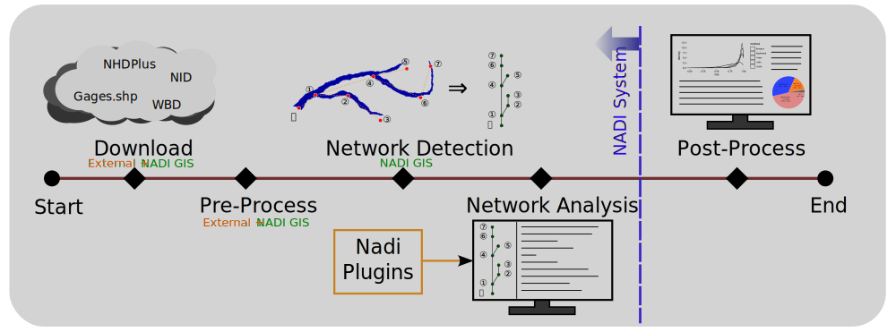
Why use NADI System?
Hydrologic modeling involves the integration of diverse data to simulate complex (and often poorly understood) hydrological processes. The analysis of complex hydrological processes often requires using domain specific calculations, and the visual representation requires the creation of custom maps and plots. Both of which can be a repetitive and error-prone processes, diverting time from data interpretation and scientific inquiry. Efficient methods are needed to automate these tasks, allowing researchers to focus on higher-level analysis and translation of their findings.
Current solution to that problem is to either use general purpose programming languages like Python, R, Julia, etc., or use domain specific software packages to increase the reliability of the tasks. Domain Specific Programming Languages (DSPLs) like the NADI Task system provides better syntax for domain specific tasks, while also are general purpose enough for users to extend it for their use cases. NADI System is trying to be the software framework that can connect those two by integrating with various softwares and providing a intuitive way to do network based data analysis.
Some example functionality of NADI system includes:
- Detection of upstream/downstream relationships from stream network,
- Network based programming using an extensible custom programming language,
- Interactive plots and reports generation,
- Import/export from/to various GIS data formats, etc.
Network Based Data Analysis
If you have data that are network based, like in case of data related to points in a river. NADI provides a text representation of the network that can be manually created with any text editor, or through NADI GIS tool.
Task System
The Domain Specific Programming Language (DSPL) developed for network analysis in NADI makes network analysis simple and intutive. So, it is easier to understand, interpret and catch mistakes. While the NADI IDE has network visualization tools built in that can help you visualiza the network attributes for visual analysis.
For example, implementing “cumulative sum of streamflow” in nadi:
node<inputsfirst>.cum_sf = node.streamflow + sum(inputs.streamflow);
The trying to do this in Python while making sure input nodes are run before the output. So you might have to write a recursive algorithm like this:
def cum_sf(node):
node.cum_sf = node.streamflow + sum([cum_sf(i) for i in node.inputs()])
return node.cum_sf
cum_sf(network.outlet())
While a common mistake people might make is to write a simple loop like this:
for node in network.nodes():
node.cum_sf = node.streamflow + sum(
[i.streamflow for i in node.inputs()]
)
Which doesn’t make sure input nodes are run before output in this case, and can error out when some variables are not present. NADI provides special syntax for cases where you can make sure variables exist before running something.
Extensibility
NADI has two types of plugin systems, which means users can write their own analysis in any programming language and have it interact with NADI through attributes, or they can write it in rust and have even more direct interaction.
Who this book is for
This book has sections explaining the concepts of the NADI system, its developmental notes, user guide and developer guide.
Hence it can be useful for people who:
- Want to understand the concepts used in NADI,
- Want to use NADI system for their use case,
- Want to develop plugin system for NADI,
- Want to contribute to the NADI system packages, etc.
Although not intended, it might include resources and links to other materials related to Rust concepts, Geographical Information System (GIS) concepts, Hydrology concepts, etc. that people could potentially benefit from.
How to use this book
You can read this book sequentially to understand the concepts used in the NADI system. And then go through the references sections for a specific use cases you want to get into the details of.
If you are in a hurry, but this is your first time reading this book, at least read the Core Concepts, then refer to the section you are interested in. Learn by Example
Code Blocks
The code blocks will have example codes for various languages, most common will be string template, task, and rust codes.
String template and task have custom syntax highlights that is intended to make it easier for the reader to understand different semantic blocks.
For task scripts/functions, if relevant to the topic, they might
have Results block following immediately showing the results of the
execution.
For example:
network load_file("./data/mississippi.net")
node[ohio] render("{_NAME:case(title)} River")
Results:
{
ohio = "Ohio River"
}
Task and Rust code block might also include lines that are needed to get the results, but hidden due to being irrelevant to the discussion. In those cases you can use the eye icon on the top right side of the code blocks to make them visible. Similarly use the copy icon to copy the visible code into clipboard.
String Template Syntax Highlight
The syntax highlight here in this book makes it so that any unknown transformers will be marked for easy detection to mistakes.
This shows var = {var:unknown()}, {_var:case(title)}
Besides this, the syntax highlight can help you detect the variables
part (within {}), lisp expression (within =()), or commands
(within $()) in the template.
Note: commands are disabled, so they won’t run during template rendering process. But if you are rendering a template to run as a command, then they will be executed during that process.
How to Cite
The sections below show you a bibliography entry in ASCE format, and BibTeX format that you can copy.
Journal Papers: TODO
The papers are currently still being worked on, and will be added here when they are published.
This book
You can cite the link to this book as follows Make sure to replace Accessed Data by today’s date.
Atreya, G. 2025. “Network Analysis and Data Integration (NADI).” Accessed May 1, 2025. https://nadi-system.github.io/.
@misc{PrefaceNetworkAnalysis,
title = {Network {{Analysis}} and {{Data Integration}} ({{NADI}})},
author = {Atreya, Gaurav},
year = {2025},
url = {https://nadi-system.github.io/},
urldate = {2025-05-02}
}
Works using Nadi System
Atreya, G., G. Mandavya, and P. Ray. 2024. “Which came first? Streamgages or Dams: Diving into the History of Unaltered River Flow Data with a Novel Analytical tool.” H51L-0865.
@inproceedings{atreyaWhichCameFirst2024,
title = {Which Came First? {{Streamgages}} or {{Dams}}: {{Diving}} into the {{History}} of {{Unaltered River Flow Data}} with a {{Novel Analytical}} Tool},
shorttitle = {Which Came First?},
booktitle = {{{AGU Fall Meeting Abstracts}}},
author = {Atreya, Gaurav and Mandavya, Garima and Ray, Patrick},
year = {2024},
month = dec,
volume = {2024},
pages = {H51L-0865},
urldate = {2025-06-03},
annotation = {ADS Bibcode: 2024AGUFMH51L.0865A}
}
Network Analysis and Data Integration (NADI)
NADI is group of software packages that facilitate network analysis and do data analysis on data related to network/nodes.
NADI System consists of:
| Tool | Description |
|---|---|
| NADI GIS | Geographic Information (GIS) Tool for Network Detection |
| NADI Task System | Domain Specific Programming Language |
| NADI Plugins | Plugins that provide the functions in Task System |
| NADI library | Rust and Python library to use in your programs |
| NADI CLI | Command Line Interface to run NADI Tasks |
| NADI IDE | Integrated Development Environment to write/ run NADI Tasks |
The github repositories consisting of source codes:
| Repo | Tool |
|---|---|
| nadi-gis | Nadi GIS |
| nadi-system | Nadi CLI/ IDE/ Core |
| nadi-plugins-rust | Sample Plugins |
| nadi-book | Source for this Nadi Book |
NADI GIS
Geographic Information (GIS) Tool for Network Detection. The main purpose of the NADI GIS is to find the network connectivity between a set of points using a stream network (which can be developed from elevation models, or downloaded from national databases).
NADI GIS can be used as a terminal command or QGIS plugin, refer to installation section for how to install it.
NADI Task System
Task System is a Domain Specific Programming Language (DSL) that is designed for river network analysis. This is the main core of the network analysis. This is included when you install NADI as a library, CLI or GUI.
NADI Plugins
The functions available to call in the task system comes from plugins. There are many internal plugins with core functions already available, while users can load their own plugins for other functions.
Refer to the plugins section of the book for more details on how to use plugins, how to write them and what to keep in mind while using them.
NADI libraries
Rust and Python library to use in your programs. Rust library nadi_core is available to download/use from cargo with the command cargo add nadi_core.
While Python library requires you to clone the repo and build it with maturin (for now).
Future plan for it includes publishing it in pypi.
Rust Libraries
If you are not writing your own rust programs or plugins, you can skip this section.
There are three rust libraries:
| Library | Use |
|---|---|
nadi_core | Core library with data types, and plugin structure |
nadi_plugin | Rust Procedural macro library to write nadi plugins |
string_template_plus | Library for string templates with variables |
Everything is loaded by nadi_core so you don’t need to load them separately.
NADI Python
While using NADI from python library, you only have access to nadi data types (Node, Network, etc), and the plugin functions, which are enough for most cases as python language syntax, variables, loops etc will give you a lot of flexibility on how to do your own analysis. The python module is structured as follows:
nadi [contains Node, Network, etc]
+-- functions
| +-- node [contains node functions]
| +-- network [contains network functions]
| +-- env [contains env functions]
+-- plugins
+-- <plugin> [each plugin will be added here]
| +-- node [contains node functions]
| +-- network [contains network functions]
| +-- env [contains env functions]
+-- <next-plugin> and so on ...
The functions are available directly through functions submodule, or through each plugin in plugins submodule. An example python script looks like this:
import nadi
import nadi.functions as fn
net = nadi.Network("data/ohio.network")
for node in net.nodes:
try:
_ = int(node.name)
node.is_usgs = True
print(fn.node.render(node, "Node {_NAME} is USGS Site"))
except ValueError:
node.is_usgs = False
This code shows how to load a network, how to loop through the nodes, and use python logic, or use nadi functions for the node and assign attributes.
More detail on how to use NADI from python will be explained in NADI Python chapter.
NADI CLI
Command Line Interface to run NADI Tasks.
This can run nadi task files, syntax highlight them for verifying them, generate markdown documentations for the plugins. The documentations included in this book (Function List and each plugin’s page like Attributes Plugin attrs) are generated with that. The documentation on each plugin functions comes from their docstrings in the code, please refer to how to write plugins section of the book for details on that.
The available options are shown below.
Usage: nadi [OPTIONS] [TASK_FILE]
Arguments:
[TASK_FILE] Tasks file to run; if `--stdin` is also provided this runs before stdin
Options:
-C, --completion <FUNC_TYPE> list all functions and exit for completions [possible values: node, network, env]
-c, --fncode <FUNCTION> print code for a function
-f, --fnhelp <FUNCTION> print help for a function
-g, --generate-doc <DOC_DIR> Generate markdown doc for all plugins and functions
-l, --list-functions list all functions and exit
-n, --network <NETWORK_FILE> network file to load before executing tasks
-p, --print-tasks print tasks before running
-P, --new-plugin <NEW_PLUGIN> Create the files for a new nadi_plugin
-N, --nadi-core <NADI_CORE> Path to the nadi_core library for the new nadi_plugin
-s, --show Show the tasks file, do not do anything
-S, --stdin Use stdin for the tasks; reads the whole stdin before execution
-r, --repl Open the REPL (interactive session) before exiting
-t, --task <TASK_STR> Run given string as task before running the file
-h, --help Print help
-V, --version Print version
NADI IDE
NADI Integrated Development Environment (IDE) is a Graphical User Interface (GUI) for the users to write/ run NADI Tasks.
As seen in the image below, IDE consists of multiple components arranged in a tiling manner. You can drag them to move them around and build your own layout. When you start IDE it suggests you some layouts and what to open. You can use the buttons on the top right of each pane to:
- change pane type
- vertically split current pane
- horizontally split current pane
- fullscreen current page/ restore layout if it’s fullscreen
- close current pane
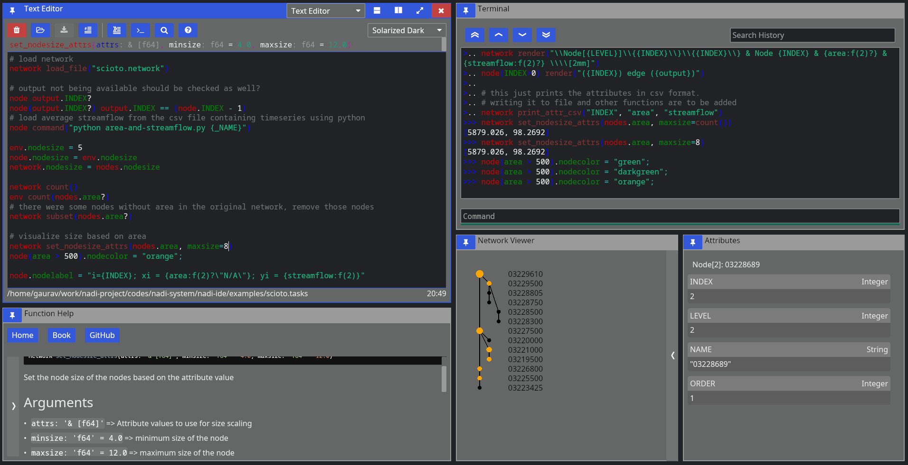
It has the following components:
Text Editor
Open text files, edit and save them.
It comes with syntax highlighting for most languages. And custom highlight for tasks and network files.
For Tasks file, it can also show you function signatures on top so you can write tasks easily, knowing what arguments the function needs and what the default values are.
While open inside IDE, it can also run the tasks by sending them to the terminal, or search help documentations on functions. Hover over the buttons on the top row to see which button does what, and the keyboard shortcut to use them as well.
Terminal
Terminal is there so you can run NADI in a interactive session. Read Eval Print Loop (REPL) of NADI here is meant mostly to be used inside the IDE to evaluate the tasks from editor, but you can open it independently as well.
Function Help
This is a GUI with the list of all available plugin functions. You can expand the sidebar on left to search and browse functions. You can filter by type of function (node, network, env) with the buttons. When you click a function you can read its documentation on the right side.
Capabilities of the iced GUI libraries are limited right now, so you cannot select or copy text from the help. Please refer to the documentation online to do that. Or generate the documentation locally using nadi-cli tool.
Network Viewer
This is a pane where network is visualized, this is a very basic visualization to see the connections and is not optimized for drawing. Please avoid using this pane (making it visible) in case of large networks as it takes a lot of computation to draw this each frame.
Attribute Browser
When you click on a node on Network Viewer it will open/update showing the attributes of that node. There is no way to edit the attributes from here, which is intensional design as attributes should be assigned from tasks so that they are reproducible. For temporary assignments use the terminal.
SVG Viewer
This is a basic utility that can open a SVG file from disk and visualize it. You can click the refresh button to re-read the same file. This is intended for a quick way to check the SVG saved/exported from tasks. This is not a full fledge SVG renderer, so open them in image viewers or browsers to see how it looks.
Trivia
- Nadi means River in Nepali (and probably in many south asian languages).
- First prototype of NADI was Not Available Data Integration, as it was meant to be an algorithm to fill data gaps using network information, but it was modified to be more generic for many network related analysis.
Installation
Nadi System is a suite of software packages each have different
installation methods. Some of the packages are uploaded to crates.io
(rust) and pypi (python). For others, you can either get the
compiled binaries from the Releases page of the
github repo [windows]. Or you can get the source code using git, and using
cargo build the packages [all OS].
Packages
For nadi-py you can use pip:
pip install nadi-py
For nadi-cli you can use cargo:
cargo install nadi
Downloading Binaries
Goto the repo of each component and refer to the releases section for binaries of different versions.
To setup the nadi-systm to load the plugins you have to place them inside the directory included in the NADI_PLUGIN_DIRS environmental variable. Refer to your Operating System’s documentation on how to set environemental variables.
The binaries should be able to run directly without needing extra steps. If you get a security warnings because the binaries are not signed, you might have to ignore it.
Building from Source
This is currently the preferred way of installing nadi-system (and nadi-gis for Linux and MacOS). Although it includes a bit more steps this makes sure the compiled program is compatible with your OS.
Prerequisites
The prerequisites for building from source are:
git[Optional]: to clone the repo, you can directly download zip from githubcargo: To build the binaries from source.gdal[Optional]: Only fornadi_gisbinary and plugin.
To install git refer to the instructions for your operating system from the official page.
For cargo follow the instructions to install rust toolsets for your operating system from the official page
Installing gdal can be little complicated for windows. For Linux, use your package manager to install gdal and/or gdal-dev package. Mac users can also install gdal using homebrew. For windows, follow the instructions from official website, after installation you might have to make some changes to environmental variables to let cargo know where your gdal binaries/header files are for the compilation to be successful. More details will be provided in the NADI GIS section.
If you use Linux or Mac (with homebrew), then the installation of prerequisites should be easy. But if you do not have the confidence to setup gdal for compiling nadi_gis use the binaries provided for them from the previous steps.
NADI System
It will build the binaries for nadi, nadi-ide, nadi-help, nadi-editor, etc. nadi is the command line interface to run nadi tasks, parse/validate syntax etc. While nadi-ide is the program to graphically develop nadi tasks and run them.
Assuming you have git and cargo,
git clone https://github.com/Nadi-System/nadi-system
cd nadi-system
cargo build --release
To run one of the binary from nadi system, use the command cargo run with binary name.
For example, the following will run the nadi-ide:
cargo run --release --bin nadi-ide
The compiled binaries will be saved in the target/release directory, you can copy them and distribute it. The binaries do not need any other files to run.
The plugins files if present in the system are automatically loaded from NADI_PLUGIN_DIRS environmental variable. Look into installing the plugin section below.
Note: all programs will compile and run in Windows, Linux, and MacOS, while only nadi-cli and mdbook-nadi will run in Android (tmux). nadi-ide and family need the GUI libraries that are not available for android (tmux) yet.
NADI GIS
NADI GIS uses gdal to read/write GIS files, so it needs to be installed. Please refer to gdal installation documentation for that.
Windows
First download compiled gdal from here:
- https://www.gisinternals.com/sdk.php Then download clang from here:
- https://github.com/llvm/llvm-project/releases
Extract it into a folder, and then set environmental variables to point to that:
GDAL_VERSION: Version of gdal e.g. ‘3.10.0’LIBCLANG_PATH: Path to thelibdirectory ofclangGDAL_HOME: Path to thegdalthat has the subdirectories likebin,lib, etc.
You can also follow the errors from the rust compilers as you compile to set the correct variables.
Finally you can get the source code and compile nadi-gis with the following command:
git clone https://github.com/Nadi-System/nadi-gis
cd nadi-gis
cargo build --release
This will generate the nadi-gis binary and gis.dll plugin in the target/release folder, they need to be run along side the gdal shared libraries (.dlls). Place the binaries in the same folder as the dlls from gdal and run it. To use the gis.dll plugin from nadi, nadi-ide, etc. same thing applies there, those binaries should be run with the gdal’s dlls to be able to load the gis plugin.
Linux and Mac
Assuming you have git, cargo, and gdal installed in your system you can build it like this:
git clone https://github.com/Nadi-System/nadi-gis
cd nadi-gis
cargo build --release --features bindgen
The bindgen feature will link the nadi-gis binary with the gdal from your system. So that you do not have to distribute gdal with the binary for your OS.
If you do not have gdal installed in your system, then you can still build the nadi-gis without the bindgen feature. This will still require gdal to be available and distributed with the binary.
cargo build --release
QGIS Plugin
The nadi-gis repo also contains the QGIS plugin that can be installed to run it through QGIS. The plugin will use the nadi-gis binary in your PATH if available. And it also contains the nadi plugin that can be loaded into the nadi system to import/export GIS files into/from the system.
You can download the zip file for plugin from releases page, and use the “Install from Zip” option on QGIS plugins tab. Or copy the nadi directory inside qgis to your python plugin directory for qgis.
Refer to the QGIS plugins page for more instructions. In future we are planning on publishing the plugin so that you can simply add it from QGIS without downloading from here.
Nadi GIS Plugin
The nadi plugin on this repo provides the functions to import attributes, geometries from GIS files, and export them into GIS files.
Nadi Plugins
Out of the two types of plugins, the executable plugins are just simple commands, they do not need to be installed along side nadi, just make sure the executables that you are using from nadi can be found in path. A simple way to verify that is to try to run that from terminal and see if it works.
The compiled plugins can be loaded by setting the NADI_PLUGIN_DIRS environmental variable. The environment variable should be the path to the folder containing the nadi plugins (in .dll, .so, or .dylib formats for windows, linux and mac). You can write your own plugins based on our examples and compile them.
Officially available plugins are in the nadi-plugins-rust directory.
Assuming you have git and cargo,
git clone https://github.com/Nadi-System/nadi-plugins-rust
cd nadi-gis
cargo build --release
The plugins will be inside the target/release directory. Copy them to the NADI_PLUGIN_DIRS directory for nadi to load them.
You can take any one of the plugins as an example to build your own, or following the plugin development instructions from the plugins chapter.
Plugins
There are two types of nadi plugins. Compiled plugins (shared libraries) are loaded dynamically from shared libraries, while executable plugins are called as shell commands. Refer to Plugins section of core concepts for more details.
Compiled Plugins
Compiled plugins are shared libraries (.so in linux, .dll in windows, and .dylib on macOS). They can be generated by compiling the nadi plugin in rust, or you can download the correct plugin for your OS and nadi_core version from the plugin repositories. It is recommended to only use plugins from trusted source.
To setup the nadi-systm to load the compiled plugins you have to place them inside the directory included in the NADI_PLUGIN_DIRS environmental variable. Refer to your Operating System’s documentation on how to set environemental variables.
The compiled plugins are loaded when NADI is starting up, there is no way to hot load or reload the plugins, so you need to reopen the nadi program itself (CLI, IDE, etc) if you want to load new/updated plugin functions.
Once the plugins are loaded, the functions are directly available from the nadi task system, they’ll act similar to the internal plugin functions.
Executable Plugins
Executable plugins are terminal commands, you set it up as you’d set any other terminal programs, by making sure the program is in PATH and can be executed from terminal. Linux and Mac do them mostly by default, while in Windows you might have to check the box saying something along the lines of “include this in path” during installation, or manually edit the PATH in “Environment Variables”.
For example, if you want to call python scripts, make sure you can run python --version in terminal and get a response.
You can also check it using the command function:
network command("python --version", echo=true)
network command("Rscript --version", echo=true)
network command("julia --version", echo=true)
Results:
$ python --version
Python 3.13.5
$ Rscript --version
Rscript (R) version 4.5.1 (2025-06-13)
$ julia --version
julia version 1.11.5
Here we can see, the commands that ran successfully and returned a version are valid.
To write scripts and run them from nadi refer to Executable Plugins section on Plugin Developer Guide.
Nadi GIS
Nadi GIS is available as a CLI tool and QGIS plugin, the CLI tool has the following functions:
Usage: nadi-gis [OPTIONS] <COMMAND>
Commands:
nid Download the National Inventory of Dams dataset
usgs Download data from USGS NHD+
layers Show list of layers in a GIS file
check Check the stream network to see outlet, branches, etc
order Order the streams, adds order attribute to each segment
network Find the network information from streams file between points
help Print this message or the help of the given subcommand(s)
Options:
-q, --quiet Don't print the stderr outputs
-h, --help Print help
The important functions are:
- Download NID and USGS NHD+ data,
- Check stream network for validity of DAG (Directed Acyclic Graph) required for NADI,
- Stream ordering for visual purposes,
- Network detection between points of interest using the stream network
You can use the help command for each one of the subcommand for more help.
For example, usgs subcommand’s help using nadi-gis help usgs gets us:
Download data from USGS NHD+
Usage: nadi-gis usgs [OPTIONS] --site-no <SITE_NO>
Options:
-s, --site-no <SITE_NO>
USGS Site number (separate by ',' for multiple)
-d, --data <DATA>
Type of data (u/d/t/b/n)
[upstream (u), downstream (d), tributaries (t), basin (b), nwis-site (n)]
[default: b]
-u, --url
Display the url and exit (no download)
-v, --verbose
Display the progress
-o, --output-dir <OUTPUT_DIR>
[default: .]
-h, --help
Print help (see a summary with '-h')
NADI QGIS
The QGIS plugin for nadi has a subset of the CLI functionality. It can be accessed from the Processing Toolbox.
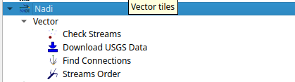
You can run the tools from there and use the layers in QGIS as inputs. The QGIS plugin will first try to find nadi-gis binary on your PATH and use it, if not it’ll try to use the binary provided with the plugins. It is preferred to have nadi-gis available in PATH and running without errors.
Example
The examples here will be given using QGIS plugin, and using the CLI tool both. CLI tool is great for quickly running things, and doing things in batch, while QGIS plugin will be better on visualization and manual fixes using other GIS tools.
Using QGIS Plugin
First downloading the data is done through the Download USGS Data tool. As shown in the screenshot below, input the USGS site ID and the data type you want to download.
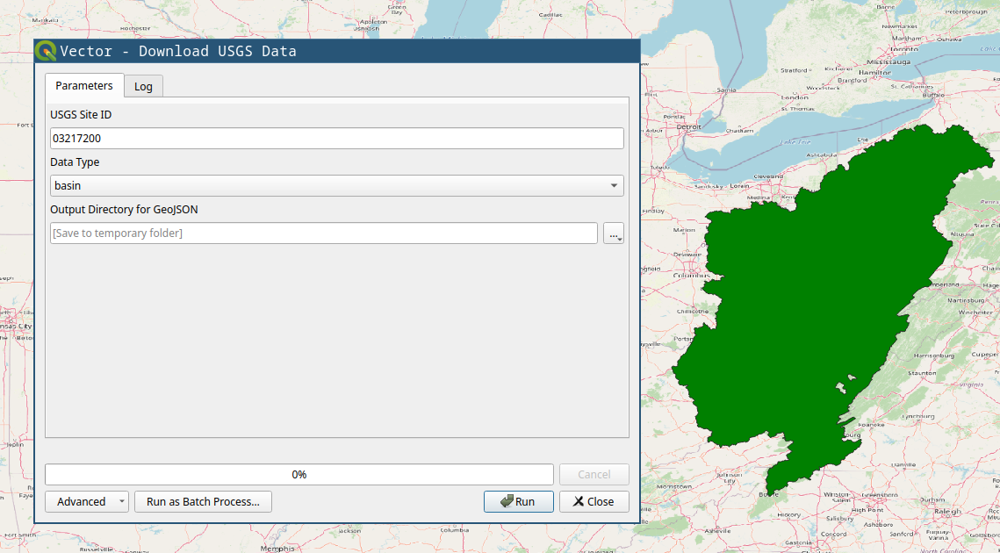
You will need, tributaries for the upstream tributaries for network, and nwis-site will download the USGS NWIS sites upstream of the location. We will use those two for the example. If you have national data from other sources, you can use the basin polygon to crop them.
Stream Order tool is mostly for visual purposes. The figure below shows the results from stream order on right compared to the raw download on left.
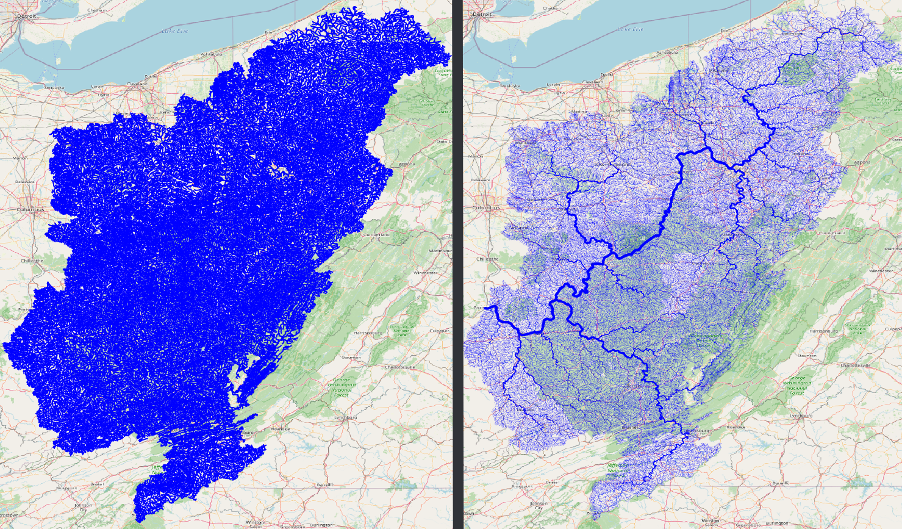
After you have streams (tributaries), you can use the Check Streams tool to see if there are any errors. It will give all the nodes and their categories, you can filter them to see if it has branches, or if it has more than one outlet. The figure below shows the branches with red dot. If we zoom in we can see how the bifurcation on the stream is detected, and how stream order calculation is confused there.
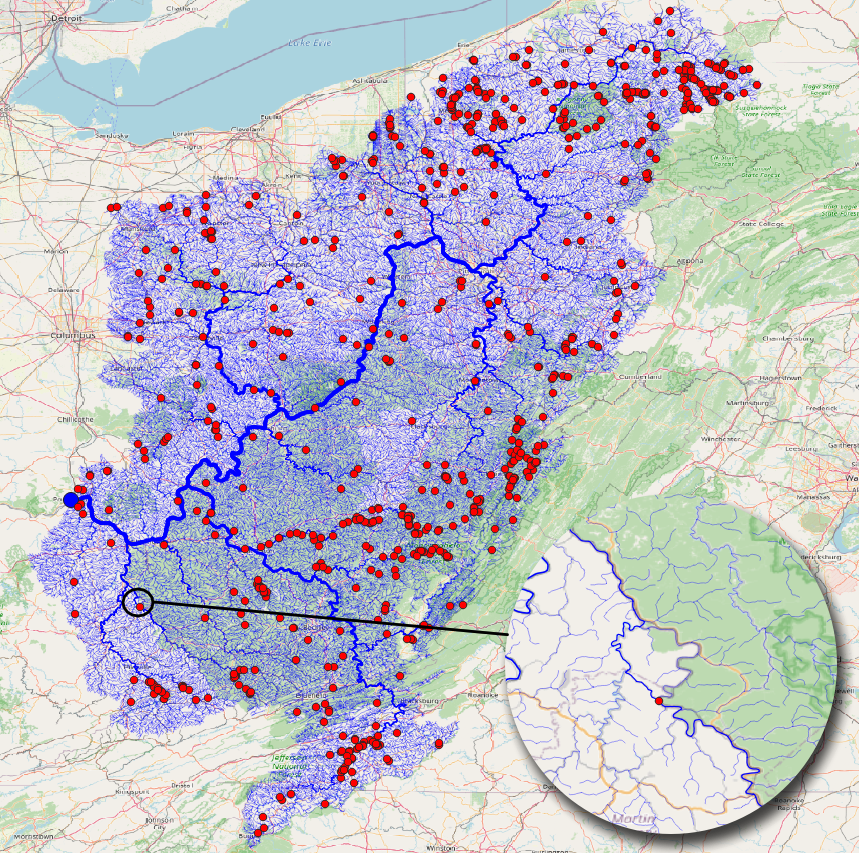
Find Connections tool will find the connection between the points using the stream network. The results below shows the tool being run on the NWIS points.
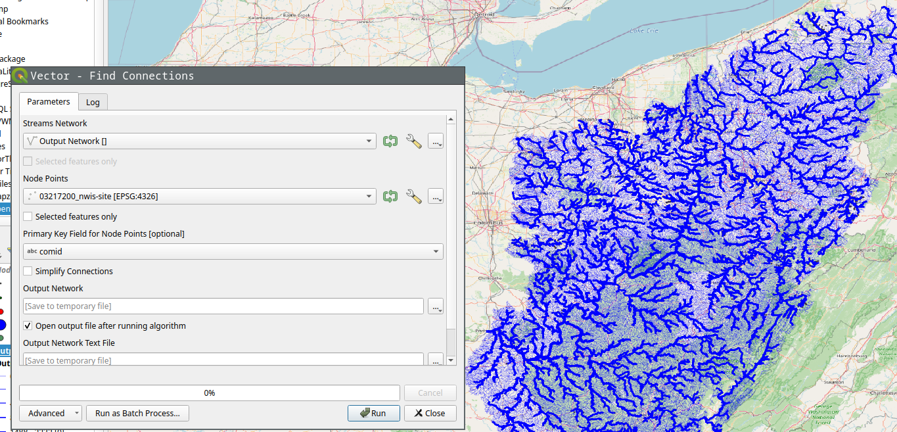
If we select simplify option, it’ll only save the start and end point of the connection instead of the whole stream.
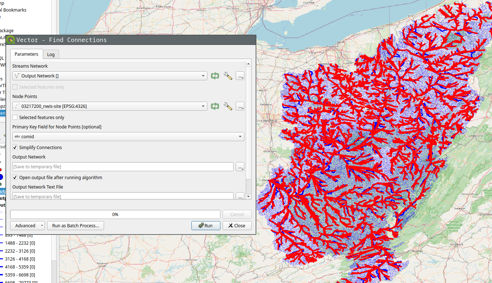
Of course you can run Stream Order on the results to get a more aesthetically pleasing result.
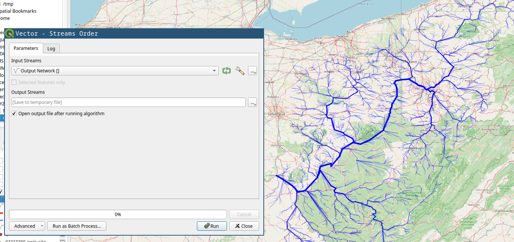
Using CLI
An example of running nadi-gis using CLI can be done in the following steps:
Download data
We’ll download the streamlines and the NWIS Sites from USGS for station 03217200 (Ohio River at Portsmouth, OH).
nadi-gis usgs -s 03217200 -d n -d t -o output/
This will download two files:
output/03217200_nwis-site.json output/03217200_tributaries.json
Now we can use check command to see if there are any problems with the streams.
nadi-gis check output/03217200_tributaries.json
That gives us the following output:
Invalid Streams File: Branches (826)
* Outlet: 1
* Branch: 826
* Confluence: 30321
* Origin: 29591
We can generate a GIS file to locate the branches and see if those are significant. Refer to the help for check or use the QGIS plugin.
And to find the connections, we use network subcommand like this:
nadi-gis network -i output/03217200_nwis-site.json output/03217200_tributaries.json
Output:
Outlet: 3221 (-82.996916801, 38.727624498) -> None
3847 -> 3199
2656 -> 2644
399 -> 1212
2965 -> 3942
2817 -> 6236
5708 -> 4733
2631 -> 5741
201 -> 2101
2066 -> 2317
3770 -> 1045
... and so on
Since this is not as useful, we can use the flags in the network subcommand to use a different id, and save the results to a network file.
First we can use layers subcommand to see the available fields in the file:
nadi-gis layers output/03217200_nwis-site.json -a
which gives us:
03217200_nwis-site
- Fields:
+ "type" (String)
+ "source" (String)
+ "sourceName" (String)
+ "identifier" (String)
+ "name" (String)
+ "uri" (String)
+ "comid" (String)
+ "reachcode" (String)
+ "measure" (String)
+ "navigation" (String)
Using comid as the id for points, and saving the results:
nadi-gis network -i output/03217200_nwis-site.json output/03217200_tributaries.json -p comid -o output/03217200.network
The output/03217200.network file will have the connections like:
15410797 -> 15411587
6889212 -> 6890126
8980342 -> 10220188
19440469 -> 19442989
19390000 -> 19389366
6929652 -> 6929644
... and so on
Make sure you use a field with unique name, and valid identifier in NADI System.
Core Concepts
This section contains a brief explanation of core concepts.
The main concepts that you need to know are:
-
Attributes are values, it can be float, integer, boolean, strings, or list of attributes, or a map of attributes (key=value),
-
Nodes are points in the network, they can have attributes, input nodes and an output node,
-
Network is a collection of nodes, network can also have attributes, Network used in the Nadi system can have only one outlet, so a ‘ROOT’ node is added if there are multiple outlet. And loading a network that is not a directed tree is undefined behaviour.
-
Expression is something that can be evaluated or executed, it consists of literal values (attributes), variables (node, network, env variables that could hold attributes), function calls, or a mathmatical or logical operation.
-
Functions in nadi are of 3 types, env functions are normal functions that take values and run, network functions take values and run on the network, while node functions run at each node (they also provide a way to subset which nodes to run it on).
-
Task is an execution body of the task system. It can be of env, network or node type. It can be conditional (If-Else) or loop (While) consisting of more tasks inside it. Task can assign values to the env/network/node attributes, or call mutable functions on the top level.
-
String Template: Some functions take string inputs that are interpreted dynamically to represent different strings based on variables.
-
Plugins provide the functions used by the nadi task system. There are internal plugins and external plugins. Internal plugins comes with the installation, while external plugins are loaded from dynamic libraries.
Keywords
| Keyword | Description |
|---|---|
| node | the node task type, function or variable |
| network/net | the network task type, function or variable |
| env | the environment task type, function or variable |
| exit | exit the program |
| end | end the execution of tasks without exiting |
| help | display help for functions |
| inputs | get node variables or function output for input nodes of a node |
| output | get node variable or function output for output node of a node |
| nodes | get node variable or function output for all nodes in the network |
| if | if statement for conditional task/expression |
| else | else statement for conditional task/expression |
| while | while statement for loop task |
| in | binary operator to check if something is in another (list/string) |
| match | binary operator to check patterns on string (regex) |
And here are some keywords reserved for future:
| Keyword | Description |
|---|---|
| function/func | user defined functions |
| map | map values in an array/attrmap to a function |
| attrs | attributes of the env/node/network |
| loop | loop task |
| for | for loop task for looping through array/attrmap |
Continue with the chapters for details on each concept. Or skip ahead to Learn by Examples if you want to jump into the examples.
Task
Task is an execution body in the task system. There are different types of tasks, specially environment, network and node type tasks, and there can be conditional tasks that only execute based on a condition or loops.
Some examples of different tasks are given below to show a general overview, but the concepts inside the tasks system will be introduced as we progress through the chapters,
Environment tasks that can evaluate expressions, assign variables, or call functions:
env 1 + 2 * 8
env render("my name is {_name}", name="John")
env.x = 12 > 2;
env.x
Results:
17
"my name is John"
true
network task loading a network, and node task getting node attributes:
network load_str("a->b\nb->c")
node.NAME
Results:
{
c = "c",
b = "b",
a = "a"
}
Conditional and Loop task
if ( !val? | (val > 5) ) {
# if val is not defined or greater than 5, set it to 0
env.val = 0
}
while (val < 5) {
env.val = env.val + 1
}
Results:
0 -> 1
1 -> 2
2 -> 3
3 -> 4
4 -> 5
Tasks system acts like a scripting language for nadi system. A Task consists of getting/evaluating/setting attributes in environment, network or nodes. The value that can be evaluated are expressions that consists of literal values, variables, or function calls that can either be a environment, node or a network function. Functions are unique based on their names, and can have default values if users do not pass all arguments.
The code examples throughout this book, that are being used to generate network diagrams, tables, etc are run using the task system.
Here is an example contents of a more complex task file, do not concern with what each task does, we will go through them in other chapters.
# sample .tasks file which is like a script with functions
node<inputsfirst> print_attrs("uniqueID")
node show_node()
network save_graphviz("/tmp/test.gv")
node<inputsfirst>.cum_val = node.val + sum(inputs.cum_val);
node[WV04113,WV04112,WV04112] print_attr_toml("testattr2")
node render("{NAME} {uniqueID} {_Dam_Height_(Ft)?}")
node list_attr("; ")
# some functions can take variable number of inputs
network calc_attr_errors(
"Dam_Height_(Ft)",
"Hydraulic_Height_(Ft)",
"rmse", "nse", "abserr"
)
node sum_safe("Latitude")
node<inputsfirst> render("Hi {SUM_ATTR}")
# multiple line for function arguments
network save_table(
"test.table",
"/tmp/test.tex",
true,
radius=0.2,
start = 2012-19-20,
end = 2012-19-23 12:04
)
node.testattr = 2
node set_attrs_render(testattr2 = "{testattr:calc(+2)}")
node[WV04112] render("{testattr} {testattr2}")
# here we use a complicated template that can do basic logic handling
node set_attrs_render(
testattr2 = "=(if (and (st+has 'Latitude) (> (st+num 'Latitude) 39)) 'true 'false)"
)
# same thing can be done if you need more flexibility in variable names
node load_toml_string(
"testattr2 = =(if (and (st+has 'Latitude) (> (st+num 'Latitude) 39)) 'true 'false)"
)
# selecting a list of nodes to run a function
node[
# comment here?
WV04113,
WV04112
] print_attr_toml("testattr2")
# selecting a path
node[WV04112 -> WV04113] render("=(> 2 3)")
Attributes
Attributes are TOML like values. They can be one of the following types:
| Type Name | Rust Type | Description |
|---|---|---|
| Bool | bool | Boolean values (true or false) |
| String | RString | Quoted String Values |
| Integer | i64 | Integer values (numbers) |
| Float | f64 | Float values (numbers with decimals) |
| Date | Date | Date (yyyy-mm-dd formatted) |
| Time | Time | Time (HH:MM, HH:MM:SS formatted) |
| DateTime | DateTime | Date and Time separed by or T |
| Array | RVec<Attribute> | List of any attribute values |
| Table/AttrMap | AttrMap | Key Value pairs of any attribute values |
You can write attributes directly into the task system to assign them, use them in functions. You can also load attributes from a file into the env/node/network.
If you want to assign a attribute inside the task system, you can do it like this:
env.river = "Ohio River"
env.river
Results:
"Ohio River"
Example Attribute File that can be loaded:
river = "Ohio River"
outlet = "Smithland Lock and Dam"
outlet_is_gage = true
outlet_site_no = ""
streamflow_start = 1930-06-07
mean_streamflow = 123456.0
obs_7q10 = 19405.3
nat_7q10 = 12335.9
num_dams_gages = 2348
Here loading the files we can see only ohio has the attributes loaded
network load_file("./data/mississippi.net")
node[ohio] load_attrs("./data/attrs/{_NAME}.toml")
node.outlet
Results:
{
lower-mississippi = <None>,
upper-mississippi = <None>,
missouri = <None>,
arkansas = <None>,
red = <None>,
ohio = "Smithland Lock and Dam",
tenessee = <None>
}
With plugins, you can load attributes from different file types.
Node
A Node is a point in network. A Node can have multiple input nodes and only one output node. And a Node can also have multiple attributes identifiable with their unique name, along with timeseries values also identifiable with their names.
If you understand graph theory, then node in nadi network is the same as a node in a graph.
Nodes in Nadi are identified by their name, that is loaded from the network file. Node names are string values, even if they are integer or float, they are read and internally stored as strings. If the node name contains characters outside of alphanumeric and underscore (_), it has to be quoted.
i.e. valid names like 123 or node_1 can appear unquoted or quoted, but names like node-123 needs to be quoted: "node-123".
network load_str("
123 -> node_1
node_1 -> \"node-123\"
")
node.NAME
Results:
{
node-123 = "node-123",
node_1 = "node_1",
123 = "123"
}
If you do not quote the name, you’ll get an error:
network load_str("123 -> node-1")
node.NAME
*Error*:
Error in function load_str: Error: Parse Error at Line 1 Column 8
123 -> node-1
^ Incomplete Path; expected node here
Network
A Network is a collection of nodes. The network can also have attributes associated with it. The connection information is stored within the nodes itself. But Network will have nodes ordered based on their connection information. So that when you loop from node from first to last, you will always find output node before its input nodes.
A condition a nadi network is that it can only be a directed graph with tree structure.
Example Network file:
# network consists of edges where input node goes to output node
# each line is of the format: input -> output
tenessee -> ohio
# if your node name has characters outside of a-zA-Z_, you need to
# quote them as strings
ohio -> "lower-mississippi"
"upper-mississippi" -> "lower-mississippi"
missouri -> "lower-mississippi"
arkansas -> "lower-mississippi"
red -> "lower-mississippi"
The given network can be loaded and visualized using svg_save function.
network load_file("./data/mississippi.net")
network command("mkdir -p output")
network svg_save(
"./output/network-mississippi.svg",
label="[{INDEX}] {_NAME:repl(-, ):case(title)}",
bgcolor="gray"
)
Results:
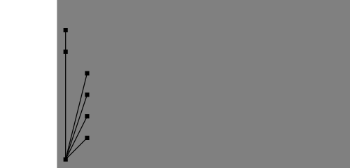
You can assign different graphical properties through node properties.
network load_file("./data/mississippi.net")
node[red].visual.nodecolor = "red";
node[ohio].visual.linecolor = "blue";
node[ohio].visual.linewidth = 3;
node["upper-mississippi", red].visual.nodesize = 8;
node[red].visual.nodeshape = "triangle";
node["upper-mississippi"].visual.nodeshape = "ellipse:0.5";
network svg_save(
"./output/network-mississippi-colors.svg",
label="[{INDEX}] {_NAME:repl(-, ):case(title)}",
bgcolor="gray"
)
Results:
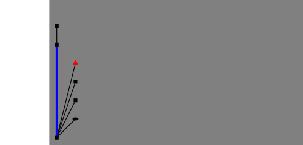
Expression
Expressions are airthmetic or logical operations. They can appear inside the conditional statements, or as input to a task, or nested in other expression or function calls.
Expressions are defined into the following categories:
Literal Values
env [1, true, "no maybe"]
Results:
[1, true, "no maybe"]
Variable
env.value = [1, true, "no maybe"];
env.value
Results:
[1, true, "no maybe"]
Variables also have a “check” mode, where it returns true if variable exists, false if it does not.
env.value = [1, true, "no maybe"];
env value?
env other_var?
Results:
true
false
You can also use use varible from node, or network in other context. For example:
env.value = [1, true, "no maybe"];
network echo(json(env.value))
Results:
[1, true, "no maybe"]
Special variable types like nodes, inputs, output are available besides env, network and node based on what type of task the expression is on.
You will learn more about this on Cross Context Functions and Variables chapter.
Unary Operator
env !true
env - 12.0
Results:
false
-12
Binary Operator
env (12 > 34) & true
env "x" in "xyz"
env 12 in [123, true]
env "my name is" match "^my.*"
Results:
false
true
false
true
If Else
env if(!true) {"if true"} else {"if false"}
Results:
"if false"
Function
env.value = [1, true, "no maybe"];
env get(value, 2)
Results:
"no maybe"
Out of all expressions, only the function is not garanteed to return a value. If you are using a function expression and expect a value and it does not return it, it’ll be a runtime error.
env echo("Hello world!") + 12
*Error*:
Hello world!
Function echo did not return a value
Special function types like nodes, inputs, output are available besides env, network and node based on what type of task the expression is on.
You will learn more about this on Cross Context Functions and Variables chapter.
String Template
String templates are strings with dynamic components that can be rendered for each node based on the node attributes.
A simple template can be like below:
Hi, my name is {name}, my address is {address?"N/A"}.
I wrote this document on {%A}, exact date: {%Y-%m-%d}.
Results (with: name=John; address=123 Road, USA):
Hi, my name is John, my address is 123 Road, USA.
I wrote this document on Wednesday, exact date: 2025-07-02.
With more complicated templates, we would be able to generate documents with text and images based on the node attributes as well.
For example the following template can be used to generate a table.
| Name | Index |
|------------------|---------|
<!-- ---8<--- -->
| {_NAME:case(up)} | {INDEX} |
<!-- ---8<--- -->
network load_file("./data/mississippi.net");
network echo(render_template("./data/example.template"))
Results:
| Name | Index |
|---|---|
| LOWER-MISSISSIPPI | 0 |
| UPPER-MISSISSIPPI | 1 |
| MISSOURI | 2 |
| ARKANSAS | 3 |
| RED | 4 |
| OHIO | 5 |
| TENESSEE | 6 |
Of course, there are better ways to generate table than this, but this shows how flexible the template system is.
Node Function
Node function runs on each node. It takes arguments and keyword arguments.
For example following node function takes multiple attribute names and prints them. The signature of the node function is print_attrs(*args).
network load_file("./data/mississippi.net")
node print_attrs("INDEX", name=false)
Results:
INDEX = 0
INDEX = 1
INDEX = 2
INDEX = 3
INDEX = 4
INDEX = 5
INDEX = 6
Only the NAME is printed as they do not have any other attributes.
Selective Execution
You can selectively run only a few nodes, or change the order the nodes are executed.
Given this network:
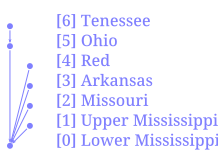
Inverse Order
network load_file("./data/mississippi.net")
node<inverse> print_attrs("NAME")
Results:
NAME = "tenessee"
NAME = "ohio"
NAME = "red"
NAME = "arkansas"
NAME = "missouri"
NAME = "upper-mississippi"
NAME = "lower-mississippi"
List of Nodes
network load_file("./data/mississippi.net")
node[tenessee,"lower-mississippi"] print_attrs("NAME")
Results:
NAME = "lower-mississippi"
NAME = "tenessee"
Path of Nodes
network load_file("./data/mississippi.net")
node[tenessee -> "lower-mississippi"] print_attrs("NAME")
Results:
NAME = "tenessee"
NAME = "ohio"
NAME = "lower-mississippi"
As we can see in the diagram, the path from tenessee to lower mississippi includes the ohio node.
Network Function
Network function runs on the network as a whole. It takes arguments and keyword arguments. Few network functions we have been using throughout the examples are load_file, load_str and svg_save:
network load_file("./data/mississippi.net")
network command("mkdir -p output")
network svg_save(
"./output/network-mississippi-sdf.svg",
label="[{INDEX}] {_NAME:repl(-, ):case(title)}",
bgcolor="gray"
)
Results:

For example following network function takes file path as input to save the network in graphviz format:
save_graphviz(
outfile [PathBuf],
name [String] = "network",
global_attrs [String] = "",
node_attr [Option < Template >],
edge_attr [Option < Template >]
)
Note that, if the arguments have default values, or are optional, then you do not need to provide them.
For example, you can simply call the above function like this.
network load_file("./data/mississippi.net")
network save_graphviz("./output/test.gv")
network clip()
# the path link are relative to /src
network echo("./output/test.gv")
Results:
digraph network {
"upper-mississippi" -> "lower-mississippi"
"missouri" -> "lower-mississippi"
"arkansas" -> "lower-mississippi"
"red" -> "lower-mississippi"
"ohio" -> "lower-mississippi"
"tenessee" -> "ohio"
}
With extra commands you can also convert it into an image
network load_file("./data/mississippi.net")
network save_graphviz("./output/test.gv")
network command("dot -Tsvg ./output/test.gv -o ./output/test.svg")
network clip()
# the link path needs to be relative to this file
network echo("../output/test.svg")
Results:
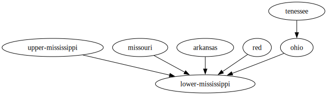
Cross Context Functions and Variables
You can access variable and call functions based on their default context (e.g. node variable/function in a node task). Additionally, you can also access the variables or call functions in select few other context.
By default, if a function is not available, node/network task calls the environment function of the same name.
For example, here the sum and array functions are environment functions, while the count is a network function. When you use Nadi IDE, it’ll show you which function is actually being called at the top of the editor.
network load_str("a->b")
network sum(array(count(), 1))
Results:
3
Besides this, you can manually call cross context variable/functions in the following ways:
Env and Network Variables/Functions
You can use env and network variables anywhere in the task system with the dot syntax.
network load_str("a->b")
env.var = 12;
network.sth = true;
env render("this is {x}", x = network.sth)
network str(env.var)
node array(network.sth, env.var, node.NAME)
Results:
"this is true"
"12"
{
b = [true, 12, "b"],
a = [true, 12, "a"]
}
Similary, env and network functions can be called anywhere. These functions cannot be mutable functions (change network internally).
Taking the previous example, if we use env function count, we get an error as the function arguments are different.
network load_str("a->b")
node network.count()
network sum(array(env.count(), 1))
*Error*:
{
b = 2,
a = 2
}
Error in function count: Argument 1 (vars [& [bool]]) is required
Node Variables/Functions
You can use node, inputs, output and nodes keywords to access node variables and functions from different contexts. nodes is valid in all tasks, while the other 3 are only valid in a node task and refer to the current node, input nodes and output node respectively.
network load_file("./data/mississippi.net")
env count(nodes._)
node inputs.NAME
Results:
7
{
lower-mississippi = ["ohio", "upper-mississippi", "missouri", "arkansas", "red"],
upper-mississippi = [],
missouri = [],
arkansas = [],
red = [],
ohio = ["tenessee"],
tenessee = []
}
You can call node functions not just for the node in the context, but also for input nodes, and output node:
Please note that the root node (outlet) of the network doesn’t have output node, so we need to skip that, which can be done through the output._? which is checking for the dummy variable _ in output, which is true if the node has an output.
network load_file("./data/mississippi.net")
node[tenessee -> "lower-mississippi"] inputs.render("{_NAME}")
node[tenessee -> "lower-mississippi"](output._?) output.render("{_NAME}")
Results:
{
tenessee = [],
ohio = ["tenessee"],
lower-mississippi = ["ohio", "upper-mississippi", "missouri", "arkansas", "red"]
}
{
tenessee = "ohio",
ohio = "lower-mississippi"
}
You can also use nodes keyword to call the function on each node, it can be used anywhere, but is useful for env and network tasks.
network load_file("./data/mississippi.net")
env nodes.render("Node [{INDEX}] {_NAME}")
Results:
["Node [0] lower-mississippi", "Node [1] upper-mississippi", "Node [2] missouri", "Node [3] arkansas", "Node [4] red", "Node [5] ohio", "Node [6] tenessee"]
Plugins
Further Reading
If you need help on any functions. Use the help as a task. You can use help node or help network for specific help. You can also browse through the function help window in the nadi-ide for help related to each functions.
help node render
Results:
node render (template: '& Template', safe: 'bool' = false)
Render the template based on the node attributes
# Arguments
- `template: & Template` String template to render
- `safe: bool` [def = false] if render fails keep it as it is instead of exiting
For more details on the template system. Refer to the String
Template section of the NADI book.
```task
network load_str("a -> b")
node.x = 13
node assert_eq(render("abc {x}"), "abc 13")
```
Or you can use nadi --fnhelp <function> using the nadi-cli.
Now that you have the overview of the nadi system’s data structures. We’ll jump into the software structure and how to setup and use the system.
If you want more details on any of the data structures refer the Developer’s references, or the library documentation.
Learn by Examples
For example data download the zip file here
| Topic | Learn About |
|---|---|
| Attributes | Setting and Getting Attributes |
| Control Flow | Control flow, if, else, while loops etc |
| Connections | Loading and modifying connections |
| Counting | Counting nodes in network, conditional |
| Cumulative | Calculating Network cumulative sums and those |
| Import Export | Importing and exporting multiple data formats |
| String Template | Using String Templates to do various things |
Attributes
There are 3 kind of attributes in nadi. Environment, Network and Node attributes. as their name suggests environment attributes are general attributes available in the current context. Network attributes are associated with the currenly loaded network. and node attributes are associated with each nodes.
nadi has special syntax where you can get/set attributes for multiple nodes at once.
network load_str("a -> b\n b -> d\n c -> d\n");
# environmental attribute
env.someattr = 123;
env.other = 1998-12-21;
env array(someattr, other)
# network attribute
network.someattr = true;
network.someattr
# node attributes
node.someattr = "string val";
node.someattr
Results:
[123, 1998-12-21]
true
{
d = "string val",
c = "string val",
b = "string val",
a = "string val"
}
like you saw with the array function, variables used are inferred as the attributes of the current env/network/node task.
you can use attributes from outside of current task type in some cases like:
- env/network variables can be used anywhere
- node variables are valid in node tasks
- node tasks has special variables types like
inputsandoutput
network load_str("a -> b\n b -> d\n c -> d\n");
# environmental attribute
env.someattr = 123;
env.other = 1998-12-21;
# network attribute
network.someattr = true;
# using network attr in env task
env array(network.someattr, other)
# using nodes in network task
network nodes.NAME
Results:
[true, 1998-12-21]
["d", "c", "b", "a"]
Similarly inputs:
network load_str("a -> b\n b -> d\n c -> d\n");
node inputs.NAME
Results:
{
d = ["b", "c"],
c = [],
b = ["a"],
a = []
}
Refer to the network diagram below to verify the output are correct:
network load_str("a -> b\n b -> d\n c -> d\n");
network svg_save("./output/attrs-simp.svg")
Results:
Control Flow
Task has some basic control flow required to write programs. They are if-else branches and while loops.
Conditional (If-Else) Blocks
There are two kind of if-else branches. One is on an expression level. which means there has to be if and else branch both as it expects a return value. The following example shows the expression with if-else block.
env.newvar = if (12 > 90) {"yes"} else {"no"};
env.newvar
Results:
"no"
Trying to do it without else block will result in an parse error as the program will error with a syntax error, for example the code below is invalid
env.newvar = if (12 > 90) {"yes"};
env.newvar
That’s when you can use the if-else block on the task level. This can be only if block as the execution blocks are tasks instead of expressions.
Here, since the condition is negative the task inside the block is never executed, hence env.newvar is empty.
if (12 > 90) {
env.newvar = "yes";
}
env.newvar
*Error*:
EvalError: Attribute not found
While Loop
While loop runs the tasks inside the block repeatedly while the condition is satisfied. There is an iteration limit of 1,000,000 for now just in case people write infinite loop. This is arbritary.
env.somevar = 1;
while (somevar < 10) {
env.somevar
env.somevar = env.somevar + 1;
}
Results:
1
2
3
4
5
6
7
8
9
This can be used to repeat a set of tasks for a various reasons.
Connections
Connections between the nodes is the most important part of nadi. you can load networks by loading a file or string. The network is a simple multiline text with one edge (input -> output) in each line. comments starting with # are supported.
Default is Empty Network
Tasks are run by default with an empty network. So you might still be able to work with network attributes, but the nodes will be empty. also note that when you load network it replaces the old one including the attributes.
network.someattr = 1234;
network.someattr
Results:
1234
But we can see the nodes are not there,
network count()
network nodes.NAME
Results:
0
[]
Trying to run node functions on the empty network means nothing is run
node render("{NAME}")
Results:
Loading Network from String
Here assume we have a network consisting of nodes of dams and gages like the following where dam nodes start with d and gages with g:
network load_str("
d1 -> d2
d3 -> g2
d2 -> g1
g1 -> d4
g2 -> d4
d4 -> g3
");
network svg_save(
"./output/simple-count.svg",
label="[{INDEX}] {_NAME}"
)
Results:
Loading Network from a File
we can load a network from a file:
network load_file("./data/mississippi.net");
network svg_save(
"./output/ex-network-conn.svg",
label="[{INDEX}] {_NAME}"
)
Results:
Modifying the network
You can modify the network after loading it as well. The example below extracts just the nodes that are dams. Compare this with the previous network to see how the connections are retained during the subsets.
network load_str("
d1 -> d2
d3 -> g2
d2 -> g1
g1 -> d4
g2 -> d4
d4 -> g3
");
node.is_dam = NAME match "^d[0-9]+";
network subset(nodes.is_dam);
network svg_save(
"./output/simple-count-subset.svg",
label="[{INDEX}] {_NAME}"
)
Results:
This can be useful when you want to remove nodes that do not satisfy some selection criteria for your analysis without having to redo the network detection part.
Counting Nodes
Here assume we have a network consisting of nodes of dams and gages like the following where dam nodes start with d and gages with g:
network load_str("
d1 -> d2
d3 -> g2
d2 -> g1
g1 -> d4
g2 -> d4
d4 -> g3
");
network svg_save(
"./output/simple-count.svg",
label="[{INDEX}] {_NAME}"
)
Results:
Simply counting number of nodes, or certain types of nodes in a network is done through count function.
network load_str("
d1 -> d2
d3 -> g2
d2 -> g1
g1 -> d4
g2 -> d4
d4 -> g3
");
node.g_node = NAME match "^g[0-9]+";
network count()
network count(nodes.g_node)
network count(nodes.g_node) / count()
Results:
7
3
0.42857142857142855
when you call a network function, you get one output, while a node function will give you the output for each node like here:
network load_str("
d1 -> d2
d3 -> g2
d2 -> g1
g1 -> d4
g2 -> d4
d4 -> g3
");
node.g_node = NAME match "^g[0-9]+";
node.g_node
Results:
{
g3 = true,
d4 = false,
g2 = true,
d3 = false,
g1 = true,
d2 = false,
d1 = false
}
Always be careful that node function is run for all the nodes separately, if you are running them without any variables from the node, then you can use network function, or environment function to get the results.
Counting the number of nodes upstream of each node gives us the order of the nodes.
network load_str("
d1 -> d2
d3 -> g2
d2 -> g1
g1 -> d4
g2 -> d4
d4 -> g3
");
node<inputsfirst>.nodes_us = 1 + sum(inputs.nodes_us);
network svg_save(
"./output/simple-count-1.svg",
label="{_NAME} = {nodes_us}"
)
Results:
We can add a condition and count the nodes that satisfy that condition only. Like counting the number of dams upstream of each node (including the node).
network load_str("
d1 -> d2
d3 -> g2
d2 -> g1
g1 -> d4
g2 -> d4
d4 -> g3
");
node.is_dam = NAME match "^d[0-9]+";
node<inputsfirst>.dams_us = int(is_dam) + sum(inputs.dams_us);
network svg_save(
"./output/simple-count-2.svg",
label="{_NAME} = {dams_us}"
)
Results:
You can similarly count the number of gages downstream. Here we need a conditional unlike in previous cases as not all nodes have output. In case of inputs, a leaf node would have no inputs but sum([]) would still be a valid output of 0. But for node without output nodes, the variable type output fails with NoOutputNode error, so we add a conditional check to avoid that.
network load_str("
d1 -> d2
d3 -> g2
d2 -> g1
g1 -> d4
g2 -> d4
d4 -> g3
");
node.is_gage = NAME match "^g[0-9]+";
node<outputfirst>.gages_ds = int(is_gage) + if (output._?) {
output.gages_ds
} else {
0
};
network svg_save(
"./output/simple-count-3.svg",
label="{_NAME} = {gages_ds}"
)
Results:
Here the condition (output._?) checks if there is output on the node or not by checking for the dummy variable _ which is present in all nodes/network.
Cumulative Sum
Here we can use the stream ordering formula to calculate the stream order for each node:
network load_str("
d1 -> d2
d3 -> g1
d2 -> g1
g1 -> d4
g2 -> d4
d4 -> g3
");
node<inputsfirst>.stream_ord = max(inputs.stream_ord, 1) + int(count(inputs._?) > 1);
network svg_save(
"./output/cumulative-1.svg",
label="{_NAME} = {stream_ord}"
)
Results:
The first part takes the maximum order of the input nodes, then the second part int(count(inputs._?) > 1) checks if there are more than one input, adding one to the order when multiple streams combine into one. You can use the funciton inputs_count() instead of count(inputs._?) to do the same thing.
That is the core of the NADI Task System, you can write functions that have their own logic and then load them into the system. You can then use the syntax and network based analysis methods of NADI using those functions.
And of course, we can visualize the different order of streams for easier understanding.
network load_str("
d1 -> d2
d3 -> g1
d2 -> g1
g1 -> d4
g2 -> d4
d4 -> g3
");
node<inputsfirst>.stream_ord = max(inputs.stream_ord, 1) + int(count(inputs._?) > 1);
node.visual.linewidth = stream_ord / 2;
node(stream_ord == 1).visual.linecolor = "green";
node(stream_ord == 2).visual.linecolor = "blue";
node(stream_ord == 3).visual.linecolor = "red";
network svg_save(
"./output/cumulative-2.svg",
label="{_NAME} = {stream_ord}"
)
Results:
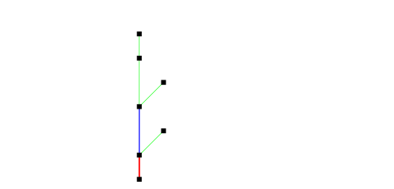
Import Export Files
Similar to how you can load network files, you can load attributes from files as well. Direct load of TOML format is supported from the internal plugins, while you might need external plugins for other formats.
load_attrs function takes a template, and reads a different files for each node to load the attributes from.
network load_file("data/ohio.network")
node attributes.load_attrs("data/attrs/{_NAME}.toml")
network svg_save(
"output/ohio-import-export.svg",
label="{_NAME} (A = {basin_area?:f(2)})",
height=700,
bgcolor="gray"
)
Results:
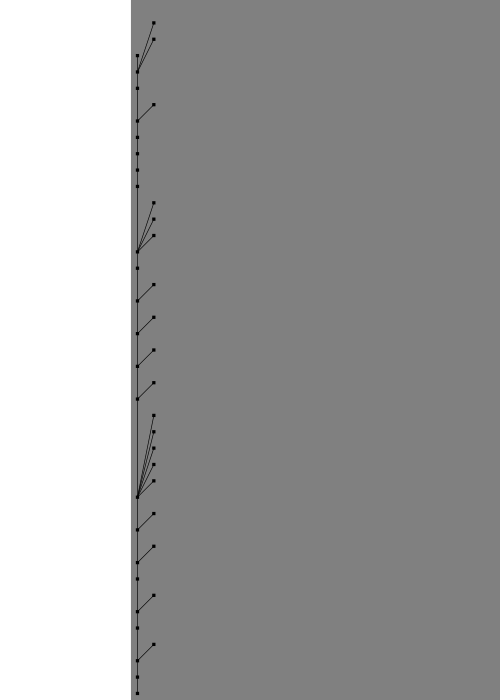
You can use the render function to see if the files being loaded are correct. Here we can see the examples for the first 4 nodes:
network load_file("data/ohio.network")
node(INDEX<4) render("data/attrs/{_NAME}.toml")
Results:
{
smithland = "data/attrs/smithland.toml",
golconda = "data/attrs/golconda.toml",
old-shawneetown = "data/attrs/old-shawneetown.toml",
mountcarmel = "data/attrs/mountcarmel.toml"
}
You can also read a attributes from string, so you can combine that with files.from_file and load it.
network load_file("data/ohio.network")
env.somevalue = attributes.parse_attrmap(
files.from_file("data/attrs/smithland.toml")
);
env.somevalue.basin_area
env.somevalue.length
Results:
371802.16
1675.95
You can export csv files
network load_file("data/ohio.network")
node attributes.load_attrs("data/attrs/{_NAME}.toml")
network table.save_csv("output/ohio-export.csv", ["NAME", "basin_area", "length"])
network command("cat output/ohio-export.csv | head", echo=true)
Results:
$ cat output/ohio-export.csv | head
NAME,basin_area,length
"smithland",371802.16,1675.95
"golconda",370942.26,1701.32
"old-shawneetown",363656.85,1772.27
"mountcarmel",74359.92,1918.08
"jt-myers",277962.45,1791.07
"evansville",275482.9,1878.29
"calhoun",18540.88,1992.5
"newburgh",253065.62,1903.58
"cannelton",249382.5,1993.72
GIS Files
First we make a GIS file by exporting. The image below shows the resulting points (red) from the shapefile and connections (black) from the Geopackage file when we visualize this on QGIS (with background of Terrain and Ohio River tributaries).
network load_file("data/ohio.network")
node attributes.load_attrs("data/attrs/{_NAME}.toml")
node.geometry = render("POINT ({lon} {lat})");
network gis.gis_save_nodes(
"output/ohio-nodes.shp",
"geometry",
{
NAME = "String",
basin_area = "Float",
length = "Float"
}
)
# Exporting the edges
network gis.gis_save_connections(
"output/ohio-connections.gpkg",
"geometry"
)
Results:
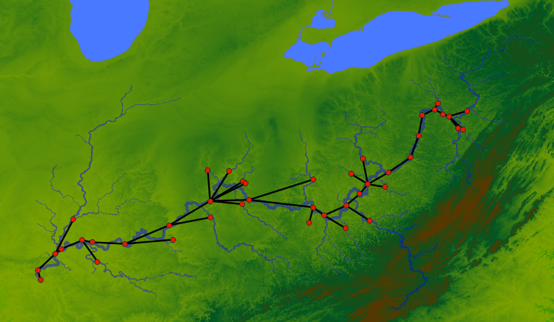
The geometry attributes should be WKT String.
Now we are using the generated GIS files to load the network and the attributes:
network gis.gis_load_network("output/ohio-connections.gpkg", "start", "end")
network gis.gis_load_attrs("output/ohio-nodes.shp", "NAME")
network svg_save(
"output/ohio-from-gis.svg",
label="{_NAME} (A = {basin_area?:f(2)}; L = {length:f(1)})",
height=700,
bgcolor="gray"
)
Results:
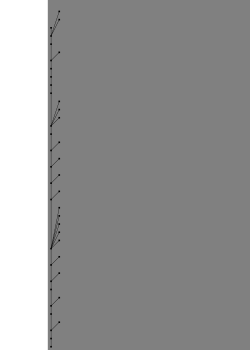
As we can see the plugins make it easier to interoperate with a lot of different data formats. Here GIS plugin will support any file types supported by gdal. Similarly, other formats can be supported by writing plugins.
String Templates
Nadi Extension Capabilities
Nadi System can be extended for custom use cases with the following ways:
- LISP on String Template
- Task System
- Rust Library
- Python Library
- Plugin System
All Plugin Functions
All the functions available on this instance of nadi, are listed here.
Env Functions
| Plugin | Function | Help |
|---|---|---|
attributes | exp | Exponential |
attributes | float_div | Float Division (same as / operator) |
attributes | float_mult | Float Multiplication (same as * operator) |
attributes | get | get the choosen attribute from Array or AttrMap |
attributes | log | Logarithm of a value, natural if base not given |
attributes | parse_attr | Parse attribute from string |
attributes | parse_attrmap | Parse attribute from string |
attributes | powf | Float power |
attributes | powi | Integer power |
attributes | sqrt | Square Root |
attributes | strmap | map values from the attribute based on the given table |
core | append | append a value to an array |
core | array | make an array from the arguments |
core | assert_eq | Assert the two values are equal |
core | assert_neq | Assert the two values are not equal |
core | assert | Assert the condition is true |
core | attrmap | make an attrmap from the arguments |
core | concat | Concat the strings |
core | count_str | Get a count of unique string values |
core | count | Count the number of true values in the array |
core | day | day from date/datetime |
core | float | make a float from value |
core | int | make an int from the value |
core | isinf | check if a float is +/- infinity |
core | isna | check if a float is nan |
core | json | format the attribute as a json string |
core | length | length of an array or hashmap |
core | max_num | Minimum of the variables |
core | max | Maximum of the variables |
core | min_num | Minimum of the variables |
core | min | Minimum of the variables |
core | month | month from date/datetime |
core | prod | Product of the variables |
core | range | Generate integer array, end is not included |
core | str | make a string from value |
core | sum | Sum of the variables |
core | type_name | Type name of the arguments |
core | unique_str | Get a list of unique string values |
core | year | year from date/datetime |
debug | clip | Echo the ––8<–– line for clipping syntax |
debug | debug | Print the args and kwargs on this function |
debug | echo | Echo the string to stdout or stderr |
debug | sleep | sleep for given number of milliseconds |
dss | list_catalog | List the catalog of the dss file |
files | exists | Checks if the given path exists |
files | from_file | Reads the file contents as string |
files | to_file | Writes the string to the file |
logic | all | check if all of the bool are true |
logic | and | Boolean and |
logic | any | check if any of the bool are true |
logic | eq | Equality than check |
logic | gt | Greater than check |
logic | ifelse | Simple if else condition |
logic | lt | Less than check |
logic | not | boolean not |
logic | or | boolean or |
nadi_pdf | typst_compile | convert the typst content into pdf/svg/png |
regex | str_count | Count the number of matches of given pattern in the string |
regex | str_filter | Filter from the string list with only the values matching pattern |
regex | str_find_all | Find all the matches of the given pattern in the value |
regex | str_find | Find the given pattern in the value |
regex | str_match | Check if the given pattern matches the value or not |
regex | str_replace | Replace the occurances of the given match |
regex | str_split | Split the string with the given pattern |
render | render | Render the template based on the node attributes |
Node Functions
| Plugin | Function | Help |
|---|---|---|
attributes | first_attr | Return the first Attribute that exists |
attributes | get_attr | Retrive attribute |
attributes | has_attr | Check if the attribute is present |
attributes | load_attrs | Loads attrs from file for all nodes based on the given template |
attributes | load_toml_render | Set node attributes by loading a toml from rendered template |
attributes | print_all_attrs | Print all attrs in a node |
attributes | print_attrs | Print the given node attributes if present |
attributes | set_attrs_ifelse | if else condition with multiple attributes |
attributes | set_attrs_render | Set node attributes based on string templates |
attributes | set_attrs | Set node attributes |
command | command | Run the given template as a shell command. |
command | run | Run the node as if it’s a command if inputs are changed |
core | has_outlet | Node has an outlet or not |
core | inputs_attr | Get attributes of the input nodes |
core | inputs_count | Count the number of input nodes in the node |
core | output_attr | Get attributes of the output node |
dams | count_node_if | Count the number of nodes upstream at each point that satisfies a certain condition |
dams | min_year | Propagate the minimum year downstream |
datafill | datafill_experiment | |
datafill | load_csv_fill | |
errors | calc_ts_error | Calculate Error from two timeseries values in the node |
errors | calc_ts_errors | Calculate Error from two timeseries values in the node |
files | exists | Checks if the given path exists when rendering the template |
print_node | print_node | Print the node with its inputs and outputs |
render | render | Render the template based on the node attributes |
series | set_series | set the following series to the node |
series | sr_count | Number of series in the node |
series | sr_dtype | Type name of the series |
series | sr_len | Length of the series |
series | sr_list | List all series in the node |
series | sr_mean | Type name of the series |
series | sr_sum | Sum of the series |
series | sr_to_array | Make an array from the series |
streamflow | check_negative | Check the given streamflow timeseries for negative values |
timeseries | ts_count | Number of timeseries in the node |
timeseries | ts_dtype | Type name of the timeseries |
timeseries | ts_len | Length of the timeseries |
timeseries | ts_list | List all timeseries in the node |
timeseries | ts_print | Print the given timeseries values in csv format |
Network Functions
| Plugin | Function | Help |
|---|---|---|
attributes | set_attrs_render | Set network attributes based on string templates |
attributes | set_attrs | Set network attributes |
command | command | Run the given template as a shell command. |
command | parallel | Run the given template as a shell command for each nodes in the network in parallel. |
connections | load_edges | Load the given edges into the network |
connections | load_file | Load the given file into the network |
connections | load_str | Load the given file into the network |
connections | save_file | Save the network into the given file |
connections | subset | Take a subset of network by only including the selected nodes |
core | count | Count the number of nodes in the network |
core | node_attr | Get the attr of the provided node |
core | outlet | Get the name of the outlet node |
datafill | save_experiments_csv | Write the given nodes to csv with given attributes and experiment results |
errors | calc_attr_error | Calculate Error from two attribute values in the network |
fancy_print | fancy_print | Fancy print a network |
gis | gis_load_attrs | Load node attributes from a GIS file |
gis | gis_load_network | Load network from a GIS file |
gis | gis_save_connections | Save GIS file of the connections |
gis | gis_save_nodes | Save GIS file of the nodes |
gnuplot | plot_timeseries | Generate a gnuplot file that plots the timeseries data in the network |
graphviz | save_graphviz | Save the network as a graphviz file |
html | export_map | Exports the network as a HTML map |
nadi_pdf | typst_table | Generate Typst code for given Table |
print_node | print_attr_csv | Print the given attributes in csv format with first column with node name |
render | render_nodes | Render each node of the network and combine to same variable |
render | render_template | Render a File template for the nodes in the whole network |
render | render | Render from network attributes |
table | save_csv | Save CSV |
table | table_to_markdown | Render the Table as a rendered markdown |
timeseries | series_csv | Write the given nodes to csv with given attributes and series |
timeseries | ts_print_csv | Save timeseries from all nodes into a single csv file |
visuals | set_nodesize_attrs | Set the node size of the nodes based on the attribute value |
visuals | svg_save | Exports the network as a svg |
Nadi Python Library
This can be installed from pypi with pip install nadi-py command.
Then you can simply import and use it:
import nadi
net = nadi.Network.from_str("a -> b")
print([n.NAME for n in net.nodes])
The functions are available inside the nadi.functions submodule.
import nadi
import nadi.functions as fn
net = nadi.Network.from_str("a -> b")
fn.network.svg_save(net, "test.svg")
Combining the power of python and Task System
You can combine the power of python with task system using the command function from Nadi. Basically, you write your logic that cannot be written in nadi in python, you can use nadi-py if you need to parse network files, load attributes or call any other nadi functions. And you can pass the results of the python script at the end by simply printing it to the standard output.
Future work is under consideration to have a tight couple between the python and nadi system.
Differences with Task System
The difference from Task system is that now we use python syntax and the python functions. The environment from task system is no longer available, and the node functions are not automatically run in a loop.
We lose the advantages brought by the Domain Specific Programming Language, while gaining the flexibility and the well developed libraries of the python language.
Some examples showing how you’d have to write python codes from equivalent examples in the book are shown below.
Example 1: looping through the nodes
network load_str("a -> b\nc -> b")
node(output._?) echo(env.render("{i} -> {o}", i=node.INDEX, o=output.INDEX))
Results:
1 -> 0
2 -> 0
Equivalent Python:
import nadi
net = nadi.Network.from_str("a -> b\nc -> b")
for node in net.nodes:
out = node.output()
if out is None:
continue
print(f"{node.INDEX} -> {out.INDEX}")
Here the code for python is longer because it is general purpose and doesn’t have the syntax tailored for network analysis like with Nadi Task System.
Example 2: Skip execution when variable is absent
If we had to check for an attribute, then it becomes even more complicated.
node(somevar?) somefunc(somevar)
import nadi
import nadi.functions as fn
net = nadi.Network.from_str("a -> b\nc -> b")
for node in net.nodes():
try:
fn.node.somefun(node, node.somevar)
except AttributeError:
continue
In case of multiple variables being used, the AttributeError might catch all of them, further fine tuning in python could make the code far longer than in nadi.
Plugins
Not only can you use nadi-py to write network based algorithms in python, you can also use it to write executable plugins that you can use to run analysis in python and feed it back to nadi system.
First thing to say about that is, you don’t need nadi-py for writing python plugins, as they are run as a normal python scripts.
Example without using nadi-py
Here is an example task that calls python using the command function:
network load_file("scioto.network")
# load average streamflow from the csv file
# containing timeseries using python
node command("python area-and-streamflow.py {_NAME}")
# this just prints the attributes in csv format.
network print_attr_csv("INDEX", "area", "streamflow")
Here the command function takes a string template, renders it and runs it as a shell command for each node.
Our python script should have a way to read that node’s name that we passed to the python command.
import sys
import pandas as pd
try:
station = sys.argv[1]
except IndexError:
print("Give station")
exit(1)
df = pd.read_csv(f"data/streamflow/{station}.csv", header=None)
sf = df.iloc[:, 4]
sf.index = pd.to_datetime(df.iloc[:, 2])
daily = sf.resample('1d').mean()
counts = daily.groupby(daily.index.year).count()
counts.index.name = "datetime"
daily.index.name = "datetime"
annual = daily.groupby(daily.index.year).mean().loc[counts > 300]
print("nadi:var:sf_mean=", float(daily.mean()))
for year, flow in annual.items():
print(f"nadi:var:sf_year_{year}={flow}")
Here the line sys.argv[1] reads the argument from command line (node’s name in this case). And reads the data for that node. The ouput is printed with prefix nadi:var: which tells nadi to load as key=val pair for that node.
Example using nadi-py
The same example can be written using nadi-py so that the execution is very short (as it is being run as a network function instead of node function; command is a slow function as a new shell instance has to be created every time it is invoked).
Here we use the command network function and pass the network file as input. If your network has changed you can use save_file network function to save the network as a text file and then pass that instead.
network load_file("scioto.network")
# load average streamflow from the csv file
# containing timeseries using python
network command("python area-and-streamflow.py scioto.network")
# this just prints the attributes in csv format.
network print_attr_csv("INDEX", "area", "streamflow")
The corresponding python script now will look like this:
import sys
import pandas as pd
import nadi
try:
network = sys.argv[1]
except IndexError:
print("Give station")
exit(1)
for node in nadi.Network(network).nodes():
station = node.NAME
df = pd.read_csv(f"data/streamflow/{station}.csv", header=None)
sf = df.iloc[:, 4]
sf.index = pd.to_datetime(df.iloc[:, 2])
daily = sf.resample('1d').mean()
counts = daily.groupby(daily.index.year).count()
counts.index.name = "datetime"
daily.index.name = "datetime"
annual = daily.groupby(daily.index.year).mean().loc[counts > 300]
print(f"nadi:var:{station}:sf_mean=", float(daily.mean()))
for year, flow in annual.items():
print(f"nadi:var:{station}:sf_year_{year}={flow}")
Here we load the network using nadi-py, and then loop through the node, and pass the variables back to nadi through stdout. We have to pass the node names with the nadi:var: as this is being run for the whole network. Without the node name, it’ll take the key=val pair as network attribute.
This should allow users to have a lot of flexibility in using python to do complex analysis and get the results back into nadi directly. You can also save the results of the python script into a file, and check if the file exists before running the command from nadi to save the redundant computations.
Examples
TODO: add examples from papers’ case studies.
Executable Plugins
Executable plugins are programs that can be called from terminal. The node command function, network command function and their families in the command plugin have the capacity to run external programs through the command line.
The inputs to the program is given through the command line arguments, while the output of the programs are read through the standard output of the program. This can be used to call different/same commands for nodes with arguments dependent on their attributes.
And the output from the programs are taken by reading their stdout (standard output). Any lines starting from nadi:var: (prefix) is considered a communication attempt with Nadi. Currently, you can set attribute values by providing key=val pairs after the prefix. The node function will set it for current node, and network function will set it for the network. Furthermore, in network function, you can add one more section after prefix to set node attributes. For example, nadi:var:node1:value=12 will set the value attribute to 12 in the node named node1 in the current network.
The executable plugin or commands are language agnostic, as long as the command is available to run from the parent shell they will be run.
To learn how to write code in your language to parse command line arguments refer to the Wikipedia page on Command Line Arguments
The following section shows example programs written in python and R that can interact with nadi in this way.
Python
Here is an example python script that can be called from nadi for each node. This script just reads a CSV file and passes the attributes to nadi, but more complicated programs can be written by the users.
First part is importing libraries and getting the arguments from nadi. The code below reads one string as a commandline argument and saves that into station variable.
import sys
import pandas as pd
try:
station = sys.argv[1]
except IndexError:
print("Give station")
exit(1)
Then we can use any python logic with any libraries to do what we want. Here it reads the CSV and extracts values based on the station name. This is just an example, but you can load different csv files for each station and do a lot of analysis before sending those variables to nadi.
import sys
import pandas as pd
try:
station = sys.argv[1]
except IndexError:
print("Give station")
exit(1)
df = pd.read_csv(f"data/streamflow/{station}.csv", header=None)
sf = df.iloc[:, 4]
sf.index = pd.to_datetime(df.iloc[:, 2])
sf = sf.resample('1d').mean()
Once we have our variables from analysis, we can simply print them with nadi:var: prefix so that nadi knows they are the variables it should read and load into each node.
import sys
import pandas as pd
try:
station = sys.argv[1]
except IndexError:
print("Give station")
exit(1)
df = pd.read_csv(f"data/streamflow/{station}.csv", header=None)
sf = df.iloc[:, 4]
sf.index = pd.to_datetime(df.iloc[:, 2])
sf = sf.resample('1d').mean()
print("nadi:var:sf_mean=", float(sf.mean()))
for year, flow in sf.groupby(sf.index.year).mean().items():
print(f"nadi:var:sf_year_{year}={flow}")
Now we can call this script from inside the nadi tasks system like the following, assuming the python file is saved as streamflow.py.
node command("python streamflow.py {_NAME}")
If you want to know what the template will be rendered as, use render function, and if you want to check whether it exists or not, you can use exists function.
RScript
Similar to most programming languages R can also read command line arguments when ran with RScript command instead of R.
For example if you run the following script in a file called test.r and ran it with command Rscript test.r some args 2, you get the output of [1] "some" "args" "2"
args <- commandArgs(trailingOnly = TRUE)
print(args)
So you can use the same method like in python to pass arguments, do analysis and pass it back using the cat function in r as shown below. cat function avoids printing the [1] type indices to the stdout.
cat(sprintf("nadi:var:this_val=%d\n", 1200))
Compiled Plugins
As it is not possible to forsee all the use cases in advance, the nadi software can be easily extended (easy being an relative term) to account for different use cases.
The program can load compiled shared libraries (.dll in windows,
.so in linux, and .dylib on mac). Since they are shared libraries
compiled into binaries, any programming languages can be used to
generate those. So far, the nadi_core library is available for
Rust only. Using that, plugins can be written and those functions
can be made available from the system.
Nadi core automatically loads:
- internal plugins if feature
functionsis used innadi_coreto compile it, - external plugins in the directories inside the
NADI_PLUGIN_DIRSenvironmental variables. The plugins must be compiled using the samenadi_coreversion and must have the same internal ABI for data types.
The syntax for functions in plugins are same for internal and external plugins. While the way to register the plugin differ slightly.
The difference between the internal and external plugins are that, internal plugins are compiled with the nadi_core and come with the program, while external plugins are separately compiled and loaded through dynamic libraries.
The methods for writing the plugins are the same, except at the top level: to export plugins, you have to use [nadi_core::nadi_plugin::nadi_plugin] macro
for external plugins while
[nadi_core::nadi_plugin::nadi_internal_plugin] for internal ones.
In the next sections we will go in detail about how to write plugins and load them in nadi.
Internal Plugins
Internal plugins come with the nadi system. They are only modified between the different versions of Nadi.
The internal plugins provide core functionality of the Task system like data conversion, parsing network/attribute files, logical operations, template rendering, etc.
Future planned internal plugin functions can be found in nadi-futures repository. Which in itself is an external plugin.
External Plugins
External plugins are plugins that are their own separate programs that compile to a shared library. The shared library has information about the name of the plugin, the functions that are available, as well as the bytecode required to run the functions.
You have to use the nadi_core library and the macros available there to make the plugins. Although it might be possible to write it without the macros (an example is provided), it is strongly discouraged. The example only serves as a way to demonstrate the inner working of the external plugins.
Some examples of external plugins are given in the nadi-plugins-rust repository.
An example of a complex external plugin can be found in the gis plugin from nadi-gis repository.
Steps to create a Plugin
nadi CLI tool has a function that can generate a plugin template. Simply run the nadi command with --new-plugin flag.
nadi --new-plugin <plugin-name>
This will create a directory with plugin’s name with Cargo.toml and src/lib.rs with some sample codes for plugin functions. You can then edit them as per your need.
The generated files using nadi --new-plugin sample look something like this:
Cargo.toml:
[package]
name = "sample"
version = "0.1.0"
edition = "2021"
[lib]
crate-type = ["cdylib"]
# make sure you use the same version of nadi_core, your nadi-system is in
[dependencies]
abi_stable = "0.11.3"
nadi_core = "0.7.0"
src/lib.rs:
use nadi_core::nadi_plugin::nadi_plugin;
#[nadi_plugin]
mod sample {
use nadi_core::prelude::*;
/// The macros imported from nadi_plugin read the rust function you
/// write and use that as a base to write more core internally that
/// will be compiled into the shared libraries. This means it'll
/// automatically get the argument types, documentation, mutability,
/// etc. For more details on what they can do, refer to nadi book.
use nadi_core::nadi_plugin::{env_func, network_func, node_func};
/// Example Environment function for the plugin
///
/// You can use markdown format to write detailed documentation for the
/// function you write. This will be availble from nadi-help.
#[env_func(pre = "Message: ")]
fn echo(message: String, pre: String) -> String {
format!("{}{}", pre, message)
}
/// Example Node function for the plugin
#[node_func]
fn node_name(node: &NodeInner) -> String {
node.name().to_string()
}
/// Example Network function for the plugin
///
/// You can also write docstrings for the arguments, this syntax is not
/// a valid rust syntax, but our macro will read those docstrings, saves
/// it and then removes it so that rust does not get confused. This means
/// You do not have to write separate documentation for functions.
#[network_func]
fn node_first_with_attr(
net: &Network,
/// Name of the attribute to search
attrname: String,
) -> Option<String> {
for node in net.nodes() {
let node = node.lock();
if node.attr_dot(&attrname).is_ok() {
return Some(node.name().to_string());
}
}
None
}
}The plugin can be compiled with the cargo build or cargo build --release command, it’ll generate the shared library in the target/debug or target/release folder. You can simply copy it to directory in NADI_PLUGIN_DIRS for it to be loaded.
Functions
Plugin functions are very close to normal rust functions, with extra syntax for the function arguments, and limited function argument and return types.
Function Types
There are 3 function types:
- environment
- node
- network
the macro used for each function type are availabel from nadi_core::nadi_plugin. All the macro take optional list of key = value pairs that can act like default arguments to the functions while called from the task system.
These macro will read the rust function and generate the necessary plugin code, function signature, documentation, and will even save the original code so that users can browse it through the nadi-help.
Function Arguments
There are 5 types of function arugments, that are denoted by the following attributes
| macro attr | Type | Supported Types |
|---|---|---|
| Node/Network | &/& mut + NodeInner/Network | |
| Normal arguments | T: FromAttribute | |
| #[relaxed] | Relaxed arguments | T: FromAttributeRelaxed |
| #[args] | Positional Arguments List | &[Attribute] |
| #[kwargs] | Keyword Arguments AttrMap | &AttrMap |
Users can not provide the argument Node/Network for node/network function as it is automatically provided based on the context.
Furthermore, there are required and optional arguments. And users can optionally omit the arguments that are of type Option<T>, or have default value in the macro (e.g. safe = false in the codes below).
For now, the function arguments except the Node or Network cannot be mut. But they can be reference of T if T satisfies the trait constraints, for example, instead of Vec<String>, it can be &[String]. But because the function context is evaluated for each node/network, there is no optimization by using the references.
Return Types
Function Return can be empty, an attribute value, or an error. When a function returns an error, the execution is halted. When it doesn’t return a value and an assignment is performed, it will error as well.
The return type of the function should implement Into<FunctinRet>, refer to the documentation for nadi_core::functions::FunctionRet to see what types implement it. You can also implement that for your own types.
You can simply use any type that satisfy the trait requirement mentioned above as a function return and the nadi macros will convert them automatically for you.
Verbosity
In future versions the functions will also get a flag that will let them know how verbose the functions can be. This will also come with a way to pass progress and other information while the function is still running.
Examples
Refer to the nadi_core, and other plugin repositories for sample codes for plugin functions as they are always up to date with the current version.
Here is an example containing render function that is available on all function types.
/// Render the template based on the given attributes
///
/// For more details on the template system. Refer to the String
/// Template section of the NADI book.
#[env_func(safe = false)]
fn render(
/// String template to render
template: &Template,
#[kwargs] keyval: &AttrMap,
/// if render fails keep it as it is instead of exiting
safe: bool,
) -> Result<String, String> {
let text = if safe {
keyval
.render(template)
.unwrap_or_else(|_| template.original().to_string())
} else {
keyval.render(template).map_err(|e| e.to_string())?
};
Ok(text)
} /// Render the template based on the node attributes
///
/// For more details on the template system. Refer to the String
/// Template section of the NADI book.
#[node_func(safe = false)]
fn render(
node: &NodeInner,
/// String template to render
template: &Template,
/// if render fails keep it as it is instead of exiting
safe: bool,
) -> Result<String, String> {
let text = if safe {
node.render(template)
.unwrap_or_else(|_| template.original().to_string())
} else {
node.render(template).map_err(|e| e.to_string())?
};
Ok(text)
} /// Render from network attributes
#[network_func(safe = false)]
fn render(
network: &Network,
/// Path to the template file
template: &Template,
/// if render fails keep it as it is instead of exiting
safe: bool,
) -> Result<String, String> {
let text = if safe {
network
.render(template)
.unwrap_or_else(|_| template.original().to_string())
} else {
network.render(template).map_err(|e| e.to_string())?
};
Ok(text)
}Environment Functions
Environment functions are like any normal function on programming languages that take arguments and run code. In Nadi environment functions can be called from any scope. For example, if a node function and environement function share the same name, then in a node task node function is called, but in network task env function is called.
Environment functions are denoted in the plugins with #[env_func] macro. All the arguments this function takes need to be provided by user or through default values.
Here is an example of a environment function and in plugin logic.
/// Boolean and
#[env_func]
fn and(
/// List of attributes that can be cast to bool
#[args]
conds: &[Attribute],
) -> bool {
let mut ans = true;
for c in conds {
ans = ans && bool::from_attr_relaxed(c).unwrap();
}
ans
}This function can be called inside the task system in different context like follows:
env and(true, 12)
env.something = false
env and(something, true) == (something & true)
network and(what?, and(true, true))
Results:
true
true
false
Node Functions
Node functions are run for each node in the network (or a selected group of nodes). Hence, it takes the first argument as & NodeInner or & mut NodeInner depending on the purpose of the function. Immutable functions can be called from any place, while mutable functions can only be called once on the outermost layer on the task.
Other arguments and the return types for node functions are the same as the environement functions.
Network Functions
Network functions, like node functions take &Network or & mut Network as the first argument. It has the same restrictions as the env/node functions for the arguments and the return types.
Example Usage
Ohio River Streamflow Routing Project
The Network for the flow routing is as follows:
network load_file("./data/ohio.network")
network svg_save(label="{_NAME}", outfile = "./output/ohio.svg", height=1000)
Results:

Making Tables
network load_file("./data/ohio.network")
node load_attrs("./data/attrs/{_NAME}.toml")
network clip()
# ^Ind => =(+ (st+num 'INDEX) 1)
<Node ID => {_NAME}
<Title => {_description:case(title):repl(Ky,KY):repl(In,IN):repl(Wv,WV):repl(Oh,OH)?}
>Latitude => {lat:f(4)}
>Longitude => {lon:f(4)}
Results:
| Node ID | Title | Latitude | Longitude |
|---|---|---|---|
| smithland | OHio River at Smithland Dam Smithland KY | 37.1584 | -88.4262 |
| golconda | OHio River at Dam 51 at Golconda, Il | 37.3578 | -88.4825 |
| old-shawneetown | OHio River at Old Shawneetown, Il-KY | 37.6919 | -88.1333 |
| mountcarmel | Wabash River at Mt. Carmel, Il | 38.3983 | -87.7564 |
| jt-myers | OHio River at Uniontown Dam, KY | 37.7972 | -87.9983 |
| evansville | OHio River at Evansville, IN | 37.9723 | -87.5764 |
| calhoun | Green River at Lock 2 at Calhoun, KY | 37.5339 | -87.2639 |
| newburgh | Newburgh | 37.9309 | -87.3722 |
| cannelton | OHio River at Cannelton Dam at Cannelton, IN | 37.8995 | -86.7055 |
| shepherdsville | Salt River at Shepherdsville, KY | 37.9851 | -85.7175 |
| mcalpine | OHio River at Louisville, KY | 38.2803 | -85.7991 |
| lockport | Kentucky River at Lock 2 at Lockport, KY | 38.4390 | -84.9633 |
| markland | OHio River at Markland Dam Near Warsaw, KY | 38.7748 | -84.9644 |
| milford | Little Miami River at Milford OH | 39.1714 | -84.2980 |
| catawba | Licking River at Catawba, KY | 38.7103 | -84.3108 |
| hamilton | Great Miami River at Hamilton OH | 39.3912 | -84.5722 |
| perintown | East Fork Little Miami River at Perintown OH | 39.1370 | -84.2380 |
| brookville | Whitewater River at Brookville, IN | 39.4075 | -85.0129 |
| meldahl | Meldahl | 38.7972 | -84.1705 |
| higby | Scioto River at Higby OH | 39.2123 | -82.8638 |
| greenup | Greenup | 38.6468 | -82.8608 |
| grayson | Little Sandy River at Grayson, KY | 38.3301 | -82.9393 |
| ashland | OHio River at Ashland, KY | 38.4812 | -82.6365 |
| branchland | Guyandotte River at Branchland, WV | 38.2209 | -82.2026 |
| rc-byrd | Rc-Byrd | 38.6816 | -82.1883 |
| charleston | Kanawha River at Charleston, WV | 38.3715 | -81.7021 |
| racine | OHio River at Racine Dam, WV | 38.9167 | -81.9121 |
| belleville | OHio River at Belleville Dam, WV | 39.1190 | -81.7424 |
| mcconnelsville | Muskingum River at McConnelsville OH | 39.6451 | -81.8499 |
| athens | Hocking River at Athens OH | 39.3290 | -82.0876 |
| elizabeth | Little Kanawha River at Palestine, WV | 39.0590 | -81.3896 |
| willow-island | Willow-Island | 39.3605 | -81.3204 |
| hannibal | Hannibal | 39.6671 | -80.8653 |
| pike-island | OHio River at Martins Ferry, OH | 40.1051 | -80.7084 |
| new-cumberland | New-Cumberland | 40.5277 | -80.6276 |
| montgomery | Montgomery | 40.6486 | -80.3855 |
| beaverfalls | Beaver River at Beaver Falls, PA | 40.7634 | -80.3151 |
| dashields | OHio River at Sewickley, PA | 40.5492 | -80.2056 |
| emsworth | Emsworth | 40.5043 | -80.0889 |
| natrona | Allegheny River at Natrona, PA | 40.6153 | -79.7184 |
| elizabeth2 | Monongahela River at Elizabeth, PA | 40.2623 | -79.9012 |
| sutersville | Youghiogheny River at Sutersville, PA | 40.2402 | -79.8067 |
Nadi style table with network information:
network load_file("./data/ohio.network")
node load_attrs("./data/attrs/{_NAME}.toml")
network clip()
network echo("../output/ohio-table.svg")
# ^Ind => =(+ (st+num 'INDEX) 1)
<Node ID => {_NAME}
<Title => {_description:case(title):repl(Ky,KY):repl(In,IN):repl(Wv,WV):repl(Oh,OH)?}
>Latitude => {lat:f(4)}
>Longitude => {lon:f(4)}
*Error*:
network function: "table_to_svg" not found
Generating Reports
So we write this template:
## Ohio River Routing Project
<!-- ---8<---:[smithland]: -->
Our basin Outlet is at {_description:case(title):repl(Ky,KY)} with the total basin area {basin_area:f(1)} acre-ft.
<!-- ---8<--- -->
The lower part of the Ohio basin are specifically important to us. Those are:
| ID | Basin Area | Length to Outlet |
|---------|-------------:|-----------------:|
<!-- ---8<---:[greenup -> smithland]: -->
| {_NAME} | {basin_area:f(1)} | {length:f(2)} |
<!-- ---8<--- -->
We used 4 locks and dams in the ohio river as representative locks and dams as below:
<!-- ---8<---:["willow-island",racine,markland,smithland]: -->
- {_NAME:repl(-, ):case(title)?}

<!-- ---8<--- -->
Which makes the table only for the main-stem ohio:
network load_file("./data/ohio.network")
node load_attrs("./data/attrs/{_NAME}.toml")
network clip()
network render("./data/ohio-report.template")
Results:
“./data/ohio-report.template”
Analysing Timeseries
Looking at Data Gaps
Couting the gaps in a csv data with all the nodes is easy. Let’s look at the top 5 nodes with data gaps.
network load_file("./data/ohio.network")
network clip()
network csv_count_na(
"./data/ts/observed.csv",
sort=true,
head = 5
)
*Error*:
----8<----
network function: "csv_count_na" not found
Running it for two timeseries, and comparing them base don network information. We can see the downstream part have more missing data on natural timeseries.
network load_file("./data/ohio.network")
network csv_count_na("./data/ts/observed.csv", outattr = "observed_missing")
network csv_count_na("./data/ts/natural.csv", outattr = "natural_missing")
network table_to_svg(
template="
<Node=> {_NAME}
>Observed => {observed_missing}
>Natural => {natural_missing}
",
outfile="./output/natural-gaps.svg"
)
network clip()
network echo("
<center>
Number of Missing Days in Timeseries Data

<center>
")
*Error*:
network function: "csv_count_na" not found
Visualizing Data Gaps
To look at the temporal distribution of the gaps, we can use this function.
network load_file("./data/ohio.network")
network csv_count_na("./data/ts/natural.csv", outattr = "nat_na")
network csv_data_blocks_svg(
csvfile="./data/ts/natural.csv",
outfile="./output/natural-blocks.svg",
label="{_NAME} ({=(/ (st+num 'nat_na) 365.0):f(1)} yr)"
)
network clip()
network echo("../output/natural-blocks.svg")
*Error*:
network function: "csv_count_na" not found
network load_file("./data/ohio.network")
network csv_count_na("./data/ts/observed.csv", outattr = "obs_na")
network csv_data_blocks_svg(
csvfile="./data/ts/observed.csv",
outfile="./output/observed-blocks.svg",
label="{_NAME} ({obs_na})"
)
network clip()
network echo("../output/observed-blocks.svg")
*Error*:
network function: "csv_count_na" not found
Internal Plugins
There are some plugins that are provided with the nadi_core
library. They are part of the library, so users can directly use them.
For example in the following tasks file, the functions that are highlighted are functions available from the core plugins. Other functions need to be loaded from plugins.
# sample .tasks file which is like a script with functions
node<inputsfirst> print_attrs("uniqueID")
node show_node()
network save_graphviz("/tmp/test.gv")
node<inputsfirst>.cum_val = node.val + sum(inputs.cum_val);
node[WV04113,WV04112,WV04112] print_attr_toml("testattr2")
node render("{NAME} {uniqueID} {_Dam_Height_(Ft)?}")
node list_attr("; ")
# some functions can take variable number of inputs
network calc_attr_errors(
"Dam_Height_(Ft)",
"Hydraulic_Height_(Ft)",
"rmse", "nse", "abserr"
)
node sum_safe("Latitude")
node<inputsfirst> render("Hi {SUM_ATTR}")
# multiple line for function arguments
network save_table(
"test.table",
"/tmp/test.tex",
true,
radius=0.2,
start = 2012-19-20,
end = 2012-19-23 12:04
)
node.testattr = 2
node set_attrs_render(testattr2 = "{testattr:calc(+2)}")
node[WV04112] render("{testattr} {testattr2}")
# here we use a complicated template that can do basic logic handling
node set_attrs_render(
testattr2 = "=(if (and (st+has 'Latitude) (> (st+num 'Latitude) 39)) 'true 'false)"
)
# same thing can be done if you need more flexibility in variable names
node load_toml_string(
"testattr2 = =(if (and (st+has 'Latitude) (> (st+num 'Latitude) 39)) 'true 'false)"
)
# selecting a list of nodes to run a function
node[
# comment here?
WV04113,
WV04112
] print_attr_toml("testattr2")
# selecting a path
node[WV04112 -> WV04113] render("=(> 2 3)")
Env Functions
strmap
env attributes.strmap(
attr: '& str',
attrmap: '& AttrMap',
default: 'Option < Attribute >'
)
Arguments
attr: '& str'=> Value to transform the attributeattrmap: '& AttrMap'=> Dictionary of key=value to map the data todefault: 'Option < Attribute >'=> Default value if key not found inattrmap
map values from the attribute based on the given table
env.val = strmap("Joe", {Dave = 2, Joe = 20});
env assert_eq(val, 20)
env.val2 = strmap("Joe", {Dave=2}, default = 12);
env assert_eq(val2, 12)
parse_attr
env attributes.parse_attr(toml: '& str')
Arguments
toml: '& str'=> String to parse into attribute
Parse attribute from string
env assert_eq(parse_attr("true"), true)
env assert_eq(parse_attr("123"), 123)
env assert_eq(parse_attr("12.34"), 12.34)
env assert_eq(parse_attr("\"my value\""), "my value")
env assert_eq(parse_attr("1234-12-12"), 1234-12-12)
parse_attrmap
env attributes.parse_attrmap(toml: 'String')
Arguments
toml: 'String'=> String to parse into attribute
Parse attribute from string
env assert_eq(parse_attrmap("y = true"), {y = true})
env assert_eq(parse_attrmap(
"x = [1234-12-12, true]"),
{x = [1234-12-12, true]}
)
get
env attributes.get(
parent: 'Attribute',
index: 'Attribute',
default: 'Option < Attribute >'
)
Arguments
parent: 'Attribute'=> Array or AttrMap Attribute to indexindex: 'Attribute'=> Index value (Integer for Array, String for AttrMap)default: 'Option < Attribute >'=> Default value if the index is not present
get the choosen attribute from Array or AttrMap
env.some_ar = ["this", 12, true];
env.some_am = {x = "this", y = [12, true]};
env assert_eq(get(some_ar, 0), "this")
env assert_eq(get(some_ar, 2), true)
env assert_eq(get(some_am, "x"), "this")
env assert_eq(get(some_am, "y"), [12, true])
powi
env attributes.powi(value: 'f64', power: 'i64')
Arguments
value: 'f64'=> base valuepower: 'i64'=>
Integer power
env assert_eq(powi(10.0, 2), 100.0)
powf
env attributes.powf(value: 'f64', power: 'f64')
Arguments
value: 'f64'=> base valuepower: 'f64'=>
Float power
env assert_eq(powf(100.0, 0.5), 10.0)
exp
env attributes.exp(value: 'f64')
Arguments
value: 'f64'=>
Exponential
env assert_eq(log(exp(5.0)), 5.0)
sqrt
env attributes.sqrt(value: 'f64')
Arguments
value: 'f64'=>
Square Root
env assert_eq(sqrt(25.0), 5.0)
log
env attributes.log(value: 'f64', base: 'Option < f64 >')
Arguments
value: 'f64'=>base: 'Option < f64 >'=>
Logarithm of a value, natural if base not given
env assert_eq(log(exp(2.0)), 2.0)
env assert_eq(log(2.0, 2.0), 1.0)
float_div
env attributes.float_div(value1: 'f64', value2: 'f64')
Arguments
value1: 'f64'=> numeratorvalue2: 'f64'=> denominator
Float Division (same as / operator)
env assert_eq(float_div(10.0, 2), 10.0 / 2)
float_mult
env attributes.float_mult(value1: 'f64', value2: 'f64')
Arguments
value1: 'f64'=> numeratorvalue2: 'f64'=> denominator
Float Multiplication (same as * operator)
env assert_eq(float_mult(5.0, 2), 5.0 * 2)
Node Functions
load_attrs
node attributes.load_attrs(filename: 'PathBuf')
Arguments
filename: 'PathBuf'=> Template for the filename to load node attributes from
Loads attrs from file for all nodes based on the given template
Arguments
filename: Template for the filename to load node attributes fromverbose: print verbose message
The template will be rendered for each node, and that filename from the rendered template will be used to load the attributes.
Errors
The function will error out in following conditions:
- Template for filename is not given,
- The template couldn’t be rendered,
- There was error loading attributes from the file.
print_all_attrs
node attributes.print_all_attrs()
Arguments
Print all attrs in a node
No arguments and no errors, it’ll just print all the attributes in a node with
node::attr=val format, where,
- node is node name
- attr is attribute name
- val is attribute value (string representation)
print_attrs
node attributes.print_attrs(*attrs, name: 'bool' = false)
Arguments
*attrs=>name: 'bool' = false=>
Print the given node attributes if present
Arguments
- attrs,… : list of attributes to print
- name: Bool for whether to show the node name or not
Error
The function will error if
- list of arguments are not
String - the
nameargument is not Boolean
The attributes will be printed in key=val format.
set_attrs
node attributes.set_attrs(**attrs)
Arguments
**attrs=> Key value pairs of the attributes to set
Set node attributes
Use this function to set the node attributes of all nodes, or a select few nodes using the node selection methods (path or list of nodes)
Error
The function should not error.
Example
Following will set the attribute a2d to true for all nodes
from A to D
network load_str("A -> B\n B -> D");
node[A -> D] set_attrs(a2d = true)
This is equivalent to the following:
node[A->D].a2d = true;
get_attr
node attributes.get_attr(attr: '& str', default: 'Option < Attribute >')
Arguments
attr: '& str'=> Name of the attribute to getdefault: 'Option < Attribute >'=> Default value if the attribute is not found
Retrive attribute
network load_str("A -> B\n B -> D");
node assert_eq(get_attr("NAME"), NAME);
has_attr
node attributes.has_attr(attr: '& str')
Arguments
attr: '& str'=> Name of the attribute to check
Check if the attribute is present
network load_str("A -> B\n B -> D");
node.x = 90;
node assert(has_attr("x"))
node assert(!has_attr("y"))
first_attr
node attributes.first_attr(attrs: '& [String]', default: 'Option < Attribute >')
Arguments
attrs: '& [String]'=> attribute namesdefault: 'Option < Attribute >'=> Default value if not found
Return the first Attribute that exists
This is useful when you have a bunch of attributes that might be equivalent but are using different names. Normally due to them being combined from different datasets.
network load_str("A -> B\n B -> D");
node.x = 90;
node assert_eq(first_attr(["y", "x"]), 90)
node assert_eq(first_attr(["x", "NAME"]), 90)
set_attrs_ifelse
node attributes.set_attrs_ifelse(cond: 'bool', **values)
Arguments
cond: 'bool'=> Condition to check**values=> key = [val1, val2] where key is set as first ifcondis true else second
if else condition with multiple attributes
network load_str("a -> b");
env.some_condition = true;
node set_attrs_ifelse(
env.some_condition,
val1 = [1, 2],
val2 = ["a", "b"]
);
env assert_eq(nodes.val1, [1, 1])
env assert_eq(nodes.val2, ["a", "a"])
This is equivalent to using the if-else expression directly,
node.val1 = if (env.some_condition) {1} else {2};
env assert_eq(nodes.val1, [1, 1])
Furthermore if-else expression will give a lot more flexibility than this function in normal use cases. But this function is useful when you have to do something in a batch.
set_attrs_render
node attributes.set_attrs_render(**kwargs)
Arguments
**kwargs=> key value pair of attribute to set and the Template to render
Set node attributes based on string templates
This renders the template for each node, then it sets the values from the rendered results.
network load_str("a -> b");
node set_attrs_render(val1 = "Node: {_NAME}");
node[a] assert_eq(val1, "Node: a")
load_toml_render
node attributes.load_toml_render(toml: '& Template', echo: 'bool' = false)
Arguments
toml: '& Template'=> String template to render and load as toml stringecho: 'bool' = false=> Print the rendered toml or not
Set node attributes by loading a toml from rendered template
This function will render a string, and loads it as a toml string. This is useful when you need to make attributes based on some other variables that you can combine using the string template system.
In most cases it is better to use the string manipulation functions and other environmental functions to get new attribute values to set.
network load_str("a -> b");
node load_toml_render("label = \\\"Node: {_NAME}\\\"")
node assert_eq(label, render("Node: {_NAME}"))
Network Functions
set_attrs
network attributes.set_attrs(**attrs)
Arguments
**attrs=> key value pair of attributes to set
Set network attributes
Arguments
key=value- Kwargs of attr = value
network set_attrs(val = 23.4)
network assert_eq(val, 23.4)
set_attrs_render
network attributes.set_attrs_render(**kwargs)
Arguments
**kwargs=> Kwargs of attr = String template to render
Set network attributes based on string templates
It will set the attribute as a String
network.val = 23.4
network set_attrs_render(val2 = "{val}05")
network assert_eq(val2, "23.405")
Node Functions
command
node command.command(
cmd: '& Template',
verbose: 'bool' = true,
echo: 'bool' = false
)
Arguments
cmd: '& Template'=> String Command template to runverbose: 'bool' = true=> Show the rendered version of command, and other messagesecho: 'bool' = false=> Echo the stdout from the command
Run the given template as a shell command.
Run any command in the shell. The standard output of the command
will be consumed and if there are lines starting with nadi:var:
and followed by key=val pairs, it’ll be read as new attributes
to that node.
For example if a command writes nadi:var:name="Joe" to stdout,
then the for the current node the command is being run for, name
attribute will be set to Joe. This way, you can write your
scripts in any language and pass the values back to the NADI
system.
It will also print out the new values or changes from old values,
if verbose is true.
Errors
The function will error if,
- The command template cannot be rendered,
- The command cannot be executed,
- The attributes from command’s stdout cannot be parsed properly
network load_str("a -> b");
node command("echo 'nadi:var:sth={NAME}'");
node assert_eq(sth, NAME)
run
node command.run(
command: '& str',
inputs: '& str',
outputs: '& str',
verbose: 'bool' = true,
echo: 'bool' = false
)
Arguments
command: '& str'=> Node Attribute with the command to runinputs: '& str'=> Node attribute with list of input filesoutputs: '& str'=> Node attribute with list of output filesverbose: 'bool' = true=> Print the command being runecho: 'bool' = false=> Show the output of the command
Run the node as if it’s a command if inputs are changed
This function will not run a command node if all outputs are older than all inputs. This is useful to networks where each nodes are tasks with input files and output files.
Network Functions
parallel
network command.parallel(
cmd: '& Template',
workers: 'i64' = 16,
verbose: 'bool' = true,
echo: 'bool' = false
)
Arguments
cmd: '& Template'=> String Command template to runworkers: 'i64' = 16=> Number of workers to run in parallelverbose: 'bool' = true=> Print the command being runecho: 'bool' = false=> Show the output of the command
Run the given template as a shell command for each nodes in the network in parallel.
Other than parallel execution this is same as the node function command
network load_str("a -> b");
network parallel("echo 'nadi:var:sth={NAME}'");
node assert_eq(sth, NAME)
command
network command.command(
cmd: 'Template',
verbose: 'bool' = true,
echo: 'bool' = false
)
Arguments
cmd: 'Template'=> String Command template to runverbose: 'bool' = true=> Print the command being runecho: 'bool' = false=> Show the output of the command
Run the given template as a shell command.
Run any command in the shell. The standard output of the command
will be consumed and if there are lines starting with nadi:var:
and followed by key=val pairs, it’ll be read as new attributes
to the network. If you want to pass node attributes add node name
with nadi:var:name: as the prefix for key=val.
See node command.command for more details as they have
the same implementation
The examples below run echo command to set the variables, you
can use any command that are scripting languages (python, R,
Julia, etc) or individual programs.
network load_str("a -> b");
network command("echo 'nadi:var:sth=123'");
network assert_eq(sth, 123)
network command("echo 'nadi:var:a:sth=123'");
node[a] assert_eq(sth, 123)
Network Functions
load_file
network connections.load_file(file: 'PathBuf', append: 'bool' = false)
Arguments
file: 'PathBuf'=> File to load the network connections fromappend: 'bool' = false=> Append the connections in the current network
Load the given file into the network
This replaces the current network with the one loaded from the file.
load_str
network connections.load_str(contents: '& str', append: 'bool' = false)
Arguments
contents: '& str'=> String containing Network connectionsappend: 'bool' = false=> Append the connections in the current network
Load the given file into the network
This replaces the current network with the one loaded from the file.
network load_str("a -> b");
env assert_eq(nodes.NAME, ["b", "a"])
load_edges
network connections.load_edges(edges: '& [(String, String)]', append: 'bool' = false)
Arguments
edges: '& [(String, String)]'=> String containing Network connectionsappend: 'bool' = false=> Append the connections in the current network
Load the given edges into the network
This replaces the current network with the one loaded from the file.
network load_edges([["a", "b"], ["b", "c"]]);
env assert_eq(nodes.NAME, ["c", "b", "a"])
subset
network connections.subset(filter: '& [bool]', keep: 'bool' = true)
Arguments
filter: '& [bool]'=>keep: 'bool' = true=> Keep the selected nodes (false = removes the selected)
Take a subset of network by only including the selected nodes
network load_str("a -> b\n b->c");
node[a->b].sth = true;
node[c].sth = false;
network subset(nodes.sth);
env assert_eq(nodes.NAME, ["b", "a"])
save_file
network connections.save_file(
file: 'PathBuf',
quote_all: 'bool' = true,
graphviz: 'bool' = false
)
Arguments
file: 'PathBuf'=> Path to the output filequote_all: 'bool' = true=> quote all node names; if false, doesn’t quote valid identifier namesgraphviz: 'bool' = false=> wrap the network into a valid graphviz file
Save the network into the given file
For more control on graphviz file writing, use
save_graphviz from graphviz plugin instead.
Env Functions
count
env core.count(vars: '& [bool]')
Arguments
vars: '& [bool]'=>
Count the number of true values in the array
env assert_eq(count([true, false, true, false]), 2)
type_name
env core.type_name(value: 'Attribute', recursive: 'bool' = false)
Arguments
value: 'Attribute'=> Argument to get typerecursive: 'bool' = false=> Recursively check types for array and table
Type name of the arguments
env assert_eq(type_name(true), "Bool")
env assert_eq(type_name([true, 12]), "Array")
env assert_eq(type_name([true, 12], recursive=true), ["Bool", "Integer"])
env assert_eq(type_name("true"), "String")
isna
env core.isna(val: 'f64')
Arguments
val: 'f64'=>
check if a float is nan
env assert(isna(nan + 5))
isinf
env core.isinf(val: 'f64')
Arguments
val: 'f64'=>
check if a float is +/- infinity
env assert(isinf(12.0 / 0))
float
env core.float(value: 'Attribute', parse: 'bool' = true)
Arguments
value: 'Attribute'=> Argument to convert to floatparse: 'bool' = true=> parse string to float
make a float from value
env assert_eq(float(5), 5.0)
env assert_eq(float("5.0"), 5.0)
str
env core.str(value: 'Attribute', quote: 'bool' = false)
Arguments
value: 'Attribute'=> Argument to convert to floatquote: 'bool' = false=> quote it if it’s literal string
make a string from value
env assert_eq(str(nan + 5), "nan")
env assert_eq(str(2 + 5), "7")
env assert_eq(str(12.34), "12.34")
env assert_eq(str("nan + 5"), "nan + 5")
env assert_eq(str("true", quote=true), "\"true\"")
int
env core.int(
value: 'Attribute',
parse: 'bool' = true,
round: 'bool' = true,
strfloat: 'bool' = false
)
Arguments
value: 'Attribute'=> Argument to convert to intparse: 'bool' = true=> parse string to intround: 'bool' = true=> round float into integerstrfloat: 'bool' = false=> parse string first as float before converting to int
make an int from the value
env assert_eq(int(5.0), 5)
env assert_eq(int(5.1), 5)
env assert_eq(int("45"), 45)
env assert_eq(int("5.0", strfloat=true), 5)
array
env core.array(*attributes)
Arguments
*attributes=> List of attributes
make an array from the arguments
env assert_eq(array(5, true), [5, true])
attrmap
env core.attrmap(**attributes)
Arguments
**attributes=> name and values of attributes
make an attrmap from the arguments
env assert_eq(attrmap(val=5), {val=5})
json
env core.json(value: 'Attribute')
Arguments
value: 'Attribute'=> attribute to format
format the attribute as a json string
env assert_eq(json(5), "5")
env assert_eq(json([5, true]), "[5, true]")
env assert_eq(json({a=5}), "{\"a\": 5}")
append
env core.append(array: 'Vec < Attribute >', value: 'Attribute')
Arguments
array: 'Vec < Attribute >'=> List of attributesvalue: 'Attribute'=>
append a value to an array
env assert_eq(append([4], 5), [4, 5])
length
env core.length(value: '& Attribute')
Arguments
value: '& Attribute'=> Array or a HashMap
length of an array or hashmap
env assert_eq(length([4, 5]), 2)
env assert_eq(length({x=4, y=5}), 2)
year
env core.year(value: 'Attribute')
Arguments
value: 'Attribute'=> Date or DateTime
year from date/datetime
env assert_eq(year(1223-12-12), 1223)
env assert_eq(year(1223-12-12T12:12), 1223)
env assert_eq(year(1223-12-12 12:12:08), 1223)
month
env core.month(value: 'Attribute')
Arguments
value: 'Attribute'=> Date or DateTime
month from date/datetime
env assert_eq(month(1223-12-14), 12)
env assert_eq(month(1223-12-14T15:19), 12)
day
env core.day(value: 'Attribute')
Arguments
value: 'Attribute'=> Date or DateTime
day from date/datetime
env assert_eq(day(1223-12-14), 14)
env assert_eq(day(1223-12-14T15:19), 14)
min_num
env core.min_num(vars: 'Vec < Attribute >', start: 'Attribute' = Float(inf))
Arguments
vars: 'Vec < Attribute >'=>start: 'Attribute' = Float(inf)=>
Minimum of the variables
env assert_eq(min_num([1, 2, 3]), 1)
env assert_eq(min_num([1.0, 2, 3]), 1.0)
env assert_eq(min_num([1, 2, 3], start = 0), 0)
max_num
env core.max_num(vars: 'Vec < Attribute >', start: 'Attribute' = Float(-inf))
Arguments
vars: 'Vec < Attribute >'=>start: 'Attribute' = Float(-inf)=>
Minimum of the variables
env assert_eq(max_num([1, 2, 3.0]), 3.0)
env assert_eq(max_num([1.0, 2, 3]), 3)
env assert_eq(max_num([1, inf, 3], 0), inf)
min
env core.min(vars: 'Vec < Attribute >', start: 'Attribute')
Arguments
vars: 'Vec < Attribute >'=>start: 'Attribute'=>
Minimum of the variables
env assert_eq(min([1, 2, 3], 100), 1)
env assert_eq(min([1.0, 2, 3], 100), 1.0)
env assert_eq(min([1, 2, 3], inf), 1)
env assert_eq(min(["b", "a", "d"], "zzz"), "a")
max
env core.max(vars: 'Vec < Attribute >', start: 'Attribute')
Arguments
vars: 'Vec < Attribute >'=>start: 'Attribute'=>
Maximum of the variables
env assert_eq(max([1, 2, 3], -1), 3)
env assert_eq(max([1.0, 2, 3], -1), 3)
env assert_eq(max([1, 2, 3], -inf), 3)
env assert_eq(max(["b", "a", "d"], ""), "d")
sum
env core.sum(vars: 'Vec < Attribute >', start: 'Attribute' = Integer(0))
Arguments
vars: 'Vec < Attribute >'=>start: 'Attribute' = Integer(0)=>
Sum of the variables
This function is for numeric attributes. You need to give the start attribute so that data type is valid.
env assert_eq(sum([2, 3, 4]), 9)
env assert_eq(sum([2, 3, 4], start=0.0), 9.0)
prod
env core.prod(vars: 'Vec < Attribute >', start: 'Attribute' = Integer(1))
Arguments
vars: 'Vec < Attribute >'=>start: 'Attribute' = Integer(1)=>
Product of the variables
This function is for numerical values/attributes
env assert_eq(prod([1, 2, 3]), 6)
env assert_eq(prod([1.0, 2, 3]), 6.0)
unique_str
env core.unique_str(vars: 'Vec < String >')
Arguments
vars: 'Vec < String >'=>
Get a list of unique string values
The order of the strings returned is not guaranteed
env.uniq = unique_str(["hi", "me", "hi", "you"]);
env assert_eq(length(uniq), 3)
count_str
env core.count_str(vars: 'Vec < String >')
Arguments
vars: 'Vec < String >'=>
Get a count of unique string values
env assert_eq(
count_str(["Hi", "there", "Deliah", "Hi"]),
{Hi = 2, there = 1, Deliah=1}
)
concat
env core.concat(*vars, join: '& str' = "")
Arguments
*vars=>join: '& str' = ""=>
Concat the strings
env assert_eq(concat("Hello", "World", join=" "), "Hello World")
range
env core.range(start: 'i64', end: 'i64')
Arguments
start: 'i64'=>end: 'i64'=>
Generate integer array, end is not included
env assert_eq(range(1, 5), [1, 2, 3, 4])
assert
env core.assert(condition: 'bool', note: 'String' = "Condition False")
Arguments
condition: 'bool'=>note: 'String' = "Condition False"=>
Assert the condition is true
Use assert_eq/assert_neq if you are testing equality for
better error message.
env assert(true)
assert_eq
env core.assert_eq(left: 'Attribute', right: 'Attribute')
Arguments
left: 'Attribute'=>right: 'Attribute'=>
Assert the two values are equal
This function is for testing the code, as well as for terminating the execution when certain values are not equal
env assert_eq(1, 1)
env assert_eq(true, 1 > 0)
env assert_eq("string val", concat("string", " ", "val"))
assert_neq
env core.assert_neq(left: 'Attribute', right: 'Attribute')
Arguments
left: 'Attribute'=>right: 'Attribute'=>
Assert the two values are not equal
This function is for testing the code, as well as for terminating the execution when certain values are not equal
env assert_neq(1, 1.0)
env assert_neq(true, 1 < 0)
env assert_neq("string val", concat("string", "val"))
Node Functions
inputs_count
node core.inputs_count()
Arguments
Count the number of input nodes in the node
network load_str("a -> b\n b -> d\n c -> d")
node assert_eq(inputs_count(), length(inputs._))
inputs_attr
node core.inputs_attr(attr: 'String' = "NAME")
Arguments
attr: 'String' = "NAME"=> Attribute to get from inputs
Get attributes of the input nodes
This is equivalent to using the inputs keyword
network load_str("a -> b\n b -> d\n c -> d")
node assert_eq(inputs_attr("NAME"), inputs.NAME)
has_outlet
node core.has_outlet()
Arguments
Node has an outlet or not
This is equivalent to using output._?, as _ is a dummy
variable that will always be present in all cases, it being
absent is because there is no output/outlet of that node.
network load_str("a -> b\n b -> d\n c -> d")
node assert_eq(has_outlet(), output._?)
output_attr
node core.output_attr(attr: 'String' = "NAME")
Arguments
attr: 'String' = "NAME"=> Attribute to get from inputs
Get attributes of the output node
This is equivalent to using the output keyword
network load_str("a -> b\n b -> d\n c -> d")
node(output._?) assert_eq(output_attr("NAME"), output.NAME)
Network Functions
count
network core.count(vars: 'Option < Vec < bool > >')
Arguments
vars: 'Option < Vec < bool > >'=>
Count the number of nodes in the network
network assert_eq(count(), 0)
network load_str("a -> b")
network assert_eq(count(), 2)
node.sel = INDEX < 1
network assert_eq(count(nodes.sel), 1)
outlet
network core.outlet()
Arguments
Get the name of the outlet node
network load_str("a -> b")
network assert_eq(outlet(), "b")
node_attr
network core.node_attr(name: 'String', attribute: 'String' = "_")
Arguments
name: 'String'=> name of the nodeattribute: 'String' = "_"=> attribute to get
Get the attr of the provided node
network load_str("a -> b")
network assert_eq(node_attr("a", "NAME"), "a")
Env Functions
sleep
env debug.sleep(time: 'u64' = 1000)
Arguments
time: 'u64' = 1000=>
sleep for given number of milliseconds
debug
env debug.debug(*args, **kwargs)
Arguments
*args=> Function arguments**kwargs=> Function Keyword arguments
Print the args and kwargs on this function
This function will just print out the args and kwargs the function is called with. This is for debugging purposes to see if the args/kwargs are identified properly. And can also be used to see how the nadi system takes the input from the function call.
echo
env debug.echo(
line: 'String',
error: 'bool' = false,
newline: 'bool' = true
)
Arguments
line: 'String'=> line to printerror: 'bool' = false=> print to stderr instead of stdoutnewline: 'bool' = true=> print newline at the end
Echo the string to stdout or stderr
This simply echoes anything given to it. This can be used in
combination with nadi tasks that create files (image, text,
etc). The echo function can be called to get the link to
those files back to the stdout.
Also useful for nadi preprocessor.
clip
env debug.clip(error: 'bool' = false)
Arguments
error: 'bool' = false=> print in stderr instead of in stdout
Echo the ––8<–– line for clipping syntax
This function is a utility function for the generation of nadi
book. This prints out the ----8<---- line when called, so
that mdbook preprocessor for nadi knows where to clip the
output for displaying it in the book.
This makes it easier to only show the relevant parts of the output in the documentation instead of having the user see output of other unrelated parts which are necessary for generating the results.
Example
Given the following tasks file:
net load_file("...")
net load_attrs("...")
net clip()
net render("{_NAME} {attr1}")
The clip function’s output will let the preprocessor know that only the parts after that are relevant to the user. Hence, it’ll discard outputs before that during documentation generation.
Env Functions
ifelse
env logic.ifelse(
cond: 'bool',
iftrue: 'Attribute',
iffalse: 'Attribute'
)
Arguments
cond: 'bool'=> Attribute that can be cast to bool valueiftrue: 'Attribute'=> Output ifcondis trueiffalse: 'Attribute'=> Output ifcondis false
Simple if else condition
This is similar to using the if-else expression, the
difference being the condition is relaxed. For example, for
if-else the condition should be true or false, but for this
function, the attribute can be anything that can be cast as
true or false. (e.g. 1 => true, 0 => false)
env assert_eq(ifelse(true, 1, 2), 1)
env assert_eq(ifelse(false, 1, 2), 2)
env assert_eq(ifelse(100.0, 1, 2), 1)
env assert_eq(ifelse(true, 1, 2), if (true) {1} else {2})
gt
env logic.gt(a: '& Attribute', b: '& Attribute')
Arguments
a: '& Attribute'=> first attributeb: '& Attribute'=> second attribute
Greater than check
env assert_eq(gt(1, 2), 1 > 2)
env assert_eq(gt(1.0, 20), 1.0 > 20)
lt
env logic.lt(a: '& Attribute', b: '& Attribute')
Arguments
a: '& Attribute'=> first attributeb: '& Attribute'=> second attribute
Less than check
env assert_eq(lt(1, 2), 1 < 2)
env assert_eq(lt(1.0, 20), 1.0 < 20)
eq
env logic.eq(a: '& Attribute', b: '& Attribute')
Arguments
a: '& Attribute'=> first attributeb: '& Attribute'=> second attribute
Equality than check
env assert_eq(eq(1, 2), 1 == 2)
env assert_eq(eq(2.0, 2.0), 2.0 == 2.0)
env assert_eq(eq(2.0, 2), 2.0 == 2)
and
env logic.and(*conds)
Arguments
*conds=> List of attributes that can be cast to bool
Boolean and
Similar to the operator & but the values are cast to boolean
env assert_eq(and(true, true), true)
env assert_eq(and(true, false), false)
env assert_eq(and(true, false), false & true)
or
env logic.or(*conds)
Arguments
*conds=> List of attributes that can be cast to bool
boolean or
Similar to the operator | but the values are cast to boolean
env assert_eq(or(true, false), true)
env assert_eq(or(false, false), false)
env assert_eq(or(true, false), false | true)
not
env logic.not(cond: 'bool')
Arguments
cond: 'bool'=> attribute that can be cast to bool
boolean not
Similar to the operator ! but the values are cast to boolean
env assert_eq(not(true), false)
env assert_eq(not(false), true)
env assert_eq(not(true), !true)
env assert_eq(not(false), !false)
all
env logic.all(vars: '& [bool]')
Arguments
vars: '& [bool]'=>
check if all of the bool are true
env assert_eq(all([true]), true)
env assert_eq(all([false, true]), false)
env assert_eq(all([true, true]), true)
env assert_eq(all([false]), false)
any
env logic.any(vars: '& [bool]')
Arguments
vars: '& [bool]'=>
check if any of the bool are true
env assert_eq(any([true]), true)
env assert_eq(any([false, true]), true)
env assert_eq(any([false, false]), false)
env assert_eq(any([false]), false)
Env Functions
str_filter
env regex.str_filter(attrs: 'Vec < String >', pattern: 'Regex')
Arguments
attrs: 'Vec < String >'=> attribute to check for patternpattern: 'Regex'=> Regex pattern to match
Filter from the string list with only the values matching pattern
env assert_eq(str_filter(["abc", "and", "xyz"], "^a"), ["abc", "and"])
str_match
env regex.str_match(attr: '& str', pattern: 'Regex')
Arguments
attr: '& str'=> attribute to check for patternpattern: 'Regex'=> Regex pattern to match
Check if the given pattern matches the value or not
You can also use match operator for this
env assert_eq(str_match("abc", "^a"), true)
env assert_eq(str_match("abc", "^a"), "abc" match "^a")
str_replace
env regex.str_replace(
attr: '& str',
pattern: 'Regex',
rep: '& str'
)
Arguments
attr: '& str'=> original stringpattern: 'Regex'=> Regex pattern to matchrep: '& str'=> replacement string
Replace the occurances of the given match
env assert_eq(str_replace("abc", "^a", 2), "2bc")
env assert_eq(str_replace("abc", "[abc]", 2), "222")
str_find
env regex.str_find(attr: '& str', pattern: 'Regex')
Arguments
attr: '& str'=> attribute to check for patternpattern: 'Regex'=> Regex pattern to match
Find the given pattern in the value
env assert_eq(str_find("abc", "^[ab]"), "a")
str_find_all
env regex.str_find_all(attr: '& str', pattern: 'Regex')
Arguments
attr: '& str'=> attribute to check for patternpattern: 'Regex'=> Regex pattern to match
Find all the matches of the given pattern in the value
env assert_eq(str_find_all("abc", "[ab]"), ["a", "b"])
str_count
env regex.str_count(attr: '& str', pattern: 'Regex')
Arguments
attr: '& str'=> attribute to check for patternpattern: 'Regex'=> Regex pattern to match
Count the number of matches of given pattern in the string
env assert_eq(str_count("abc", "[ab]"), 2)
str_split
env regex.str_split(
attr: '& str',
pattern: 'Regex',
limit: 'Option < usize >'
)
Arguments
attr: '& str'=> String to splitpattern: 'Regex'=> Regex pattern to split withlimit: 'Option < usize >'=> Limit the split to maximum number
Split the string with the given pattern
env assert_eq(str_split("abc", "^[ab]"), ["", "bc"])
Env Functions
render
env render.render(
template: '& Template',
safe: 'bool' = false,
**keyval
)
Arguments
template: '& Template'=> String template to rendersafe: 'bool' = false=> if render fails keep it as it is instead of exiting**keyval=>
Render the template based on the node attributes
For more details on the template system. Refer to the String Template section of the NADI book.
env assert_eq(render("abc {_x}", x="ab"), "abc ab")
env assert_eq(render("abc {x}", x=23), "abc 23")
If safe parameter is true, then it doesn’t error out even if the variable is not present, and will just return the original template. By default it errors out if there are any variables in the template without a value.
env assert_eq(render("abc {x}", safe=true), "abc {x}")
Node Functions
render
node render.render(template: '& Template', safe: 'bool' = false)
Arguments
template: '& Template'=> String template to rendersafe: 'bool' = false=> if render fails keep it as it is instead of exiting
Render the template based on the node attributes
For more details on the template system. Refer to the String Template section of the NADI book.
network load_str("a -> b")
node.x = 13
node assert_eq(render("abc {x}"), "abc 13")
Network Functions
render
network render.render(template: '& Template', safe: 'bool' = false)
Arguments
template: '& Template'=> Path to the template filesafe: 'bool' = false=> if render fails keep it as it is instead of exiting
Render from network attributes
network.x = 13
network assert_eq(render("abc {x}"), "abc 13")
render_nodes
network render.render_nodes(
template: '& Template',
safe: 'bool' = false,
join: '& str' = "\n"
)
Arguments
template: '& Template'=> Path to the template filesafe: 'bool' = false=> if render fails keep it as it is instead of exitingjoin: '& str' = "\n"=> String to join the render results
Render each node of the network and combine to same variable
network load_str("a -> b")
node.x = INDEX + 1
network assert_eq(render_nodes("abc {x}"), "abc 1\nabc 2")
render_template
network render.render_template(template: 'PathBuf')
Arguments
template: 'PathBuf'=> Path to the template file
Render a File template for the nodes in the whole network
Write the file with templates for input variables in the same way you write string templates. It’s useful for markdown files, as the curly braces syntax won’t be used for anything else that way. Do be careful about that. And the program will replace those templates with their values when you run it with inputs.
It’ll repeat the same template for each node and render them.
If you want only a portion of the file repeated for nodes
inclose them with lines with ---8<--- on both start and the
end. The lines containing the clip syntax will be ignored,
ideally you can put them in comments.
You can also use ---include:<filename>[::line_range] syntax to
include a file, the line_range syntax, if present, should be
in the form of start[:increment]:end, you can exclude start
or end to denote the line 1 or last line (e.g. :5 is 1:5,
and 3: is from line 3 to the end)
Arguments
template: Path to the template fileoutfile[Optional]: Path to save the template file, if none it’ll be printed in stdout
Node Functions
sr_count
node series.sr_count()
Arguments
Number of series in the node
sr_list
node series.sr_list()
Arguments
List all series in the node
sr_dtype
node series.sr_dtype(name: '& str', safe: 'bool' = false)
Arguments
name: '& str'=> Name of the seriessafe: 'bool' = false=> Do not error if series does’t exist
Type name of the series
sr_len
node series.sr_len(name: '& str', safe: 'bool' = false)
Arguments
name: '& str'=> Name of the seriessafe: 'bool' = false=> Do not error if series does’t exist
Length of the series
sr_mean
node series.sr_mean(name: '& str')
Arguments
name: '& str'=> Name of the series
Type name of the series
sr_sum
node series.sr_sum(name: '& str')
Arguments
name: '& str'=> Name of the series
Sum of the series
set_series
node series.set_series(
name: '& str',
value: 'Attribute',
dtype: '& str'
)
Arguments
name: '& str'=> Name of the series to save asvalue: 'Attribute'=> Argument to convert to seriesdtype: '& str'=> type
set the following series to the node
sr_to_array
node series.sr_to_array(name: '& str', safe: 'bool' = false)
Arguments
name: '& str'=> Name of the seriessafe: 'bool' = false=> Do not error if series does’t exist
Make an array from the series
Network Functions
save_csv
network table.save_csv(
path: '& Path',
fields: '& [String]',
filter: 'Option < Vec < bool > >'
)
Arguments
path: '& Path'=>fields: '& [String]'=>filter: 'Option < Vec < bool > >'=>
Save CSV
table_to_markdown
network table.table_to_markdown(
table: 'Option < PathBuf >',
template: 'Option < String >',
outfile: 'Option < PathBuf >',
connections: 'Option < String >'
)
Arguments
table: 'Option < PathBuf >'=> Path to the table filetemplate: 'Option < String >'=> String template for tableoutfile: 'Option < PathBuf >'=> Path to the output fileconnections: 'Option < String >'=> Show connections column or not
Render the Table as a rendered markdown
Error
The function will error out if,
- error reading the table file,
- error parsing table template,
- neither one of table file or table template is provided,
- error while rendering markdown (caused by error on rendering cell values from templates)
- error while writing to the output file
Node Functions
ts_count
node timeseries.ts_count()
Arguments
Number of timeseries in the node
ts_list
node timeseries.ts_list()
Arguments
List all timeseries in the node
ts_dtype
node timeseries.ts_dtype(name: '& str', safe: 'bool' = false)
Arguments
name: '& str'=> Name of the timeseriessafe: 'bool' = false=> Do not error if timeseries does’t exist
Type name of the timeseries
ts_len
node timeseries.ts_len(name: '& str', safe: 'bool' = false)
Arguments
name: '& str'=> Name of the timeseriessafe: 'bool' = false=> Do not error if timeseries does’t exist
Length of the timeseries
ts_print
node timeseries.ts_print(
name: '& String',
header: 'bool' = true,
head: 'Option < i64 >'
)
Arguments
name: '& String'=> name of the timeseriesheader: 'bool' = true=> show headerhead: 'Option < i64 >'=> number of head rows to show (all by default)
Print the given timeseries values in csv format
TODO
- save to file instead of showing with
outfile: Option<PathBuf>
Network Functions
ts_print_csv
network timeseries.ts_print_csv(
name: 'String',
head: 'Option < usize >',
nodes: 'Option < HashSet < String > >'
)
Arguments
name: 'String'=> Name of the timeseries to savehead: 'Option < usize >'=> number of head rows to show (all by default)nodes: 'Option < HashSet < String > >'=> Include only these nodes (all by default)
Save timeseries from all nodes into a single csv file
TODO: error/not on unqual length
TODO: error/not on no timeseries, etc…
TODO: output to file: PathBuf
series_csv
network timeseries.series_csv(
filter: 'Vec < bool >',
outfile: 'PathBuf',
attrs: 'Vec < String >',
series: 'Vec < String >'
)
Arguments
filter: 'Vec < bool >'=>outfile: 'PathBuf'=> Path to the output csvattrs: 'Vec < String >'=> list of attributes to writeseries: 'Vec < String >'=> list of series to write
Write the given nodes to csv with given attributes and series
Network Functions
set_nodesize_attrs
network visuals.set_nodesize_attrs(
attrs: '& [f64]',
minsize: 'f64' = 4.0,
maxsize: 'f64' = 12.0
)
Arguments
attrs: '& [f64]'=> Attribute values to use for size scalingminsize: 'f64' = 4.0=> minimum size of the nodemaxsize: 'f64' = 12.0=> maximum size of the node
Set the node size of the nodes based on the attribute value
svg_save
network visuals.svg_save(
outfile: '& Path',
label: 'Template' = Template { original: "{_NAME}", parts: [Var("_NAME", "")] },
x_spacing: 'u64' = 25,
y_spacing: 'u64' = 25,
offset: 'u64' = 10,
twidth: 'f64' = 9.0,
width: 'u64' = 500,
height: 'u64' = 240,
bgcolor: 'Option < String >',
page_width: 'Option < u64 >',
page_height: 'Option < u64 >'
)
Arguments
outfile: '& Path'=>label: 'Template' = Template { original: "{_NAME}", parts: [Var("_NAME", "")] }=>x_spacing: 'u64' = 25=>y_spacing: 'u64' = 25=>offset: 'u64' = 10=>twidth: 'f64' = 9.0=> in average how many units each text character takes
For auto calculating width of the page since we don’t have Cairo
width: 'u64' = 500=>height: 'u64' = 240=>bgcolor: 'Option < String >'=>page_width: 'Option < u64 >'=>page_height: 'Option < u64 >'=>
Exports the network as a svg
External Plugins
This section showcases the functions from external plugins developed along side the NADI project due to various reasons.
The plugins listed here can be installed with following steps:
- clone the repository of external plugins,
- compile it locally with cargo,
- move all generated dynamic libraries to the nadi plugin directory.
Node Functions
count_node_if
node dams.count_node_if(count_attr: '& str', cond: 'bool')
Arguments
count_attr: '& str'=>cond: 'bool'=>
Count the number of nodes upstream at each point that satisfies a certain condition
min_year
node dams.min_year(yearattr: '& str', write_var: '& str' = "MIN_YEAR")
Arguments
yearattr: '& str'=>write_var: '& str' = "MIN_YEAR"=>
Propagate the minimum year downstream
Node Functions
load_csv_fill
node datafill.load_csv_fill(
name: 'String',
file: 'Template',
timefmt: 'String',
columns: '(String, String)',
method: 'DataFillMethod' = Linear,
dtype: 'String' = "Floats"
)
Arguments
name: 'String'=> Name of the timeseriesfile: 'Template'=> Template of the CSV file for the nodestimefmt: 'String'=> date time format, if you only have date, but have time on format string, it will paniccolumns: '(String, String)'=> Names of date column and value columnmethod: 'DataFillMethod' = Linear=> Method to use for data filling: forward/backward/lineardtype: 'String' = "Floats"=> DataType to load into timeseries
datafill_experiment
node datafill.datafill_experiment(
name: 'String',
file: 'Template',
ratio_var: 'String',
columns: 'Option < (String, String) >',
experiments: 'usize' = 10,
samples: 'usize' = 100
)
Arguments
name: 'String'=> Prefix for name of the series to save metrics onfile: 'Template'=> Template of the CSV file for the nodesratio_var: 'String'=> Variable to use for inputratio/outputratio methodscolumns: 'Option < (String, String) >'=> Names of date column and value columnexperiments: 'usize' = 10=> Number of experiements to runsamples: 'usize' = 100=> Number of samples on each experiment
Network Functions
save_experiments_csv
network datafill.save_experiments_csv(
outfile: 'PathBuf',
attrs: 'Vec < String >',
prefix: 'String',
errors: 'Vec < String >',
filter: 'Option < Vec < bool > >'
)
Arguments
outfile: 'PathBuf'=> Path to the output csvattrs: 'Vec < String >'=> list of attributes to writeprefix: 'String'=> Prefixerrors: 'Vec < String >'=> list of errors to writefilter: 'Option < Vec < bool > >'=>
Write the given nodes to csv with given attributes and experiment results
Node Functions
calc_ts_error
node errors.calc_ts_error(
ts1: '& str',
ts2: '& str',
error: '& str' = "rmse"
)
Arguments
ts1: '& str'=> Timeseries value to use as actual valuets2: '& str'=> Timeseries value to be used to calculate the errorerror: '& str' = "rmse"=> Error type, one of rmse/nrmse/abserr/nse
Calculate Error from two timeseries values in the node
It calculates the error between two timeseries values from the node
calc_ts_errors
node errors.calc_ts_errors(
ts1: '& String',
ts2: '& String',
errors: '& [String]'
)
Arguments
ts1: '& String'=> Timeseries value to use as actual valuets2: '& String'=> Timeseries value to be used to calculate the errorerrors: '& [String]'=> Error types to calculate, one of rmse/nrmse/abserr/nse
Calculate Error from two timeseries values in the node
It calculates the error between two timeseries values from the node.
Network Functions
calc_attr_error
network errors.calc_attr_error(
attr1: 'String',
attr2: 'String',
error: 'String' = "rmse"
)
Arguments
attr1: 'String'=> Attribute value to use as actual valueattr2: 'String'=> Attribute value to be used to calculate the errorerror: 'String' = "rmse"=> Error type, one of rmse/nrmse/abserr/nse
Calculate Error from two attribute values in the network
It calculates the error using two attribute values from all the nodes.
Network Functions
fancy_print
network fancy_print.fancy_print()
Arguments
Fancy print a network
Network Functions
plot_timeseries
network gnuplot.plot_timeseries(
csvfile: 'Template',
datecol: '& str',
datacol: '& str',
outfile: '& Path',
timefmt: '& str' = "%Y-%m-%d",
config: '& GnuplotConfig' = GnuplotConfig { outfile: None, terminal: None, csv: false, preamble: "" },
skip_missing: 'bool' = false
)
Arguments
csvfile: 'Template'=>datecol: '& str'=>datacol: '& str'=>outfile: '& Path'=>timefmt: '& str' = "%Y-%m-%d"=>config: '& GnuplotConfig' = GnuplotConfig { outfile: None, terminal: None, csv: false, preamble: "" }=>skip_missing: 'bool' = false=>
Generate a gnuplot file that plots the timeseries data in the network
Node Functions
attr_fraction_svg
node graphics.attr_fraction_svg(
attr: '& str',
outfile: '& Template',
color: '& AttrColor',
height: 'f64' = 80.0,
width: 'f64' = 80.0,
margin: 'f64' = 10.0
)
Arguments
attr: '& str'=>outfile: '& Template'=>color: '& AttrColor'=>height: 'f64' = 80.0=>width: 'f64' = 80.0=>margin: 'f64' = 10.0=>
Create a SVG file with the given network structure
Network Functions
csv_load_ts
network graphics.csv_load_ts(
file: 'PathBuf',
name: 'String',
date_col: 'String' = "date",
timefmt: 'String' = "%Y-%m-%d",
data_type: 'String' = "Floats"
)
Arguments
file: 'PathBuf'=>name: 'String'=>date_col: 'String' = "date"=>timefmt: 'String' = "%Y-%m-%d"=>data_type: 'String' = "Floats"=>
Count the number of na values in CSV file for each nodes in a network
Arguments
file: Input CSV file path to read (should have column with node names for all nodes)name: Name of the timeseriesdate_col: Date Column nametimefmt: date time format, if you only have date, but have time on format string, it will panicdata_type: Type of the data to cast into
csv_count_na
network graphics.csv_count_na(
file: 'PathBuf',
outattr: 'Option < String >',
sort: 'bool' = false,
skip_zero: 'bool' = false,
head: 'Option < i64 >'
)
Arguments
file: 'PathBuf'=>outattr: 'Option < String >'=>sort: 'bool' = false=>skip_zero: 'bool' = false=>head: 'Option < i64 >'=>
Count the number of na values in CSV file for each nodes in a network
Arguments
file: Input CSV file path to read (should have column with node names for all nodes)outattr: Output attribute to save the count of NA to. If empty print to stdoutsort: show the nodes with larger gaps on top, only applicable while printinghead: at max show only this number of nodesskip_zero: skip nodes with zero missing numbers
csv_data_blocks_svg
network graphics.csv_data_blocks_svg(
csvfile: 'PathBuf',
outfile: 'PathBuf',
label: 'Template',
date_col: 'String' = "date",
config: 'NetworkPlotConfig' = NetworkPlotConfig { width: 250.0, height: 300.0, delta_x: 20.0, delta_y: 20.0, offset: 30.0, radius: 3.0, fontsize: 16.0, fontface: FontFace { inner: Shared { inner: 0x64a7356cd4c0 } } },
blocks_width: 'f64' = 500.0,
fit: 'bool' = false
)
Arguments
csvfile: 'PathBuf'=>outfile: 'PathBuf'=>label: 'Template'=>date_col: 'String' = "date"=>config: 'NetworkPlotConfig' = NetworkPlotConfig { width: 250.0, height: 300.0, delta_x: 20.0, delta_y: 20.0, offset: 30.0, radius: 3.0, fontsize: 16.0, fontface: FontFace { inner: Shared { inner: 0x64a7356cd4c0 } } }=>blocks_width: 'f64' = 500.0=>fit: 'bool' = false=>
Draw the data blocks with arrows in timeline
export_svg
network graphics.export_svg(
outfile: 'PathBuf',
config: 'NetworkPlotConfig' = NetworkPlotConfig { width: 250.0, height: 300.0, delta_x: 20.0, delta_y: 20.0, offset: 30.0, radius: 3.0, fontsize: 16.0, fontface: FontFace { inner: Shared { inner: 0x64a7356cd4c0 } } },
fit: 'bool' = false,
label: 'Option < Template >',
highlight: '& [usize]' = []
)
Arguments
outfile: 'PathBuf'=>config: 'NetworkPlotConfig' = NetworkPlotConfig { width: 250.0, height: 300.0, delta_x: 20.0, delta_y: 20.0, offset: 30.0, radius: 3.0, fontsize: 16.0, fontface: FontFace { inner: Shared { inner: 0x64a7356cd4c0 } } }=>fit: 'bool' = false=>label: 'Option < Template >'=>highlight: '& [usize]' = []=>
Create a SVG file with the given network structure
table_to_svg
network graphics.table_to_svg(
outfile: 'PathBuf',
table: 'Option < PathBuf >',
template: 'Option < String >',
config: 'NetworkPlotConfig' = NetworkPlotConfig { width: 250.0, height: 300.0, delta_x: 20.0, delta_y: 20.0, offset: 30.0, radius: 3.0, fontsize: 16.0, fontface: FontFace { inner: Shared { inner: 0x64a7356cd4c0 } } },
fit: 'bool' = false,
highlight: '& [String]' = []
)
Arguments
outfile: 'PathBuf'=>table: 'Option < PathBuf >'=>template: 'Option < String >'=>config: 'NetworkPlotConfig' = NetworkPlotConfig { width: 250.0, height: 300.0, delta_x: 20.0, delta_y: 20.0, offset: 30.0, radius: 3.0, fontsize: 16.0, fontface: FontFace { inner: Shared { inner: 0x64a7356cd4c0 } } }=>fit: 'bool' = false=>highlight: '& [String]' = []=>
Create a SVG file with the given network structure
Network Functions
save_graphviz
network graphviz.save_graphviz(
outfile: '& Path',
name: '& str' = "network",
global_attrs: '& str' = "",
node_attr: 'Option < & Template >',
edge_attr: 'Option < & Template >'
)
Arguments
outfile: '& Path'=>name: '& str' = "network"=>global_attrs: '& str' = ""=>node_attr: 'Option < & Template >'=>edge_attr: 'Option < & Template >'=>
Save the network as a graphviz file
Arguments:
outfile- Path to the output filename- Name of the graph
Network Functions
export_map
network html.export_map(
outfile: '& Path',
template: 'Template',
pagetitle: '& str' = "NADI Network",
nodetitle: 'Template' = Template { original: "{_NAME}", parts: [Var("_NAME", "")] },
connections: 'bool' = true
)
Arguments
outfile: '& Path'=>template: 'Template'=>pagetitle: '& str' = "NADI Network"=>nodetitle: 'Template' = Template { original: "{_NAME}", parts: [Var("_NAME", "")] }=>connections: 'bool' = true=>
Exports the network as a HTML map
Network Functions
gis_load_network
network gis.gis_load_network(
file: 'PathBuf',
source: 'String',
destination: 'String',
layer: 'Option < String >',
ignore_null: 'bool' = false
)
Arguments
file: 'PathBuf'=> GIS file to load (can be any format GDAL can understand)source: 'String'=> Field in the GIS file corresponding to the input node namedestination: 'String'=> layer of the GIS file corresponding to the output node namelayer: 'Option < String >'=> layer of the GIS file, first one picked by defaultignore_null: 'bool' = false=> Ignore feature if it has fields with null value
Load network from a GIS file
Loads the network from a gis file containing the edges in fields
gis_load_attrs
network gis.gis_load_attrs(
file: 'PathBuf',
node: 'String',
layer: 'Option < String >',
geometry: 'String' = "GEOM",
ignore: 'String' = "",
sanitize: 'bool' = true,
err_no_node: 'bool' = false
)
Arguments
file: 'PathBuf'=> GIS file to load (can be any format GDAL can understand)node: 'String'=> Field in the GIS file corresponding to node namelayer: 'Option < String >'=> layer of the GIS file, first one picked by defaultgeometry: 'String' = "GEOM"=> Attribute to save the GIS geometry inignore: 'String' = ""=> Field names separated by comma, to ignoresanitize: 'bool' = true=> sanitize the name of the fieldserr_no_node: 'bool' = false=> Error if all nodes are not found in the GIS file
Load node attributes from a GIS file
The function reads a GIS file in any format (CSV, GPKG, SHP, JSON, etc) and loads their fields as attributes to the nodes.
gis_save_connections
network gis.gis_save_connections(
file: 'PathBuf',
geometry: 'String',
driver: 'Option < String >',
layer: 'String' = "network",
filter: 'Option < Vec < bool > >'
)
Arguments
file: 'PathBuf'=>geometry: 'String'=>driver: 'Option < String >'=>layer: 'String' = "network"=>filter: 'Option < Vec < bool > >'=>
Save GIS file of the connections
gis_save_nodes
network gis.gis_save_nodes(
file: 'PathBuf',
geometry: 'String',
attrs: 'HashMap < String, String >' = {},
driver: 'Option < String >',
layer: 'String' = "nodes",
filter: 'Option < Vec < bool > >'
)
Arguments
file: 'PathBuf'=>geometry: 'String'=>attrs: 'HashMap < String, String >' = {}=>driver: 'Option < String >'=>layer: 'String' = "nodes"=>filter: 'Option < Vec < bool > >'=>
Save GIS file of the nodes
Node Functions
print_node
node print_node.print_node()
Arguments
Print the node with its inputs and outputs
Network Functions
print_attr_csv
network print_node.print_attr_csv(*args)
Arguments
*args=>
Print the given attributes in csv format with first column with node name
Node Functions
check_negative
node streamflow.check_negative(ts_name: '& str')
Arguments
ts_name: '& str'=> Name of the timeseries with streamflow data
Check the given streamflow timeseries for negative values
Data Structure
This section will describe the data structures associated with NADI system in brief.
For more accurate and upto date details on the data structures and their available methods. Look at the API reference of nadi_core on docs.rs.
Node
Points with attributes and timeseries. These can be any point as long as they’ll be on the network and connection to each other.
The attributes can be any format. There is a special type of attribute timeseries to deal with timeseries data that has been provided by the system. But users are free to make their own attributes and plugins + functions that can work with those attributes.
Since attributes are loaded using TOML file, simple attributes can be stored and parsed from strings, moderately complex ones can be saved as a combination of array and tables, and more complex ones can be saved in different files and their path can be stored as node attributes.
Here is an example node attribute file. Here we have string, float, int and boolean values, as well as a example csv timeseries
stn="smithland"
nat_7q10=12335.94850131619
orsanco_7q10=16900
lock=true
[ts.csv]
streamflow = {path="data/smithland.csv", datetime="date", data="flow"}
Network
Collection of Nodes, with Connection information. The connection information is saved in the nodes itself (=inputs= and =output= variables), but they are assigned from the network.
The nadi system (lit, river system), is designed for the connections between points along a river. Out of different types of river networks possible, it can only handle non-branching tributaries system, where each point can have zero to multiple inputs, but can only have one output. Overall the system should have a single output point. There can be branches in the river itself in the physical sense as long as they converse before the next point of interests. There cannot be node points that have more than one path to reach another node in the representative system.
Network file are simple text files with each edge on one line. Node
names can be words with alphanumeric characters with the additional
character _, similar to how rust identifiers work. The Node names
can also be quoted strings, in those cases any characters are
supported inside the quotes.
Here is an example network file,
cannelton -> newburgh
newburgh -> evansville
evansville -> "jt-myers"
# comments are supported
"jt-myers" -> "old-shawneetown"
"old-shawneetown" -> golconda
markland -> mcalpine
golconda -> smithland
Drawing it out:
network load_file("./data/mississippi.net")
network svg_save(
"./output/mississippi.svg",
label="[{INDEX}] {_NAME:repl(-, ):case(title)}"
)
network clip()
# the link path needs to be relative to this file
network echo("../output/mississippi.svg")
Results:
The program also plans to support the connection import from the DOT format (graphviz package).
Network file without any connection format can be written as a node per line, but those network can only call sequential functions, and not input dependent ones.
Depending on the use cases, it can probably be applied to other systems that are similar to a river system. Or even without the connection information, the functions that are independent to each other can be run in sequential order.
Timeseries
Timeseries of values, at regular interval. Can support integers, floats, booleans, strings, Arrays and Tables.
For timeseries that are not in a format that NADI can understand. The path to the timeseries can be provided as a node attribute and plugin functions can be written to use that path to load the timeseries for the node.
String Templates
The templating system will be used by an external library developed by me. The library can be modified if there are specific needs for this project.
The template system is feature rich, allowing for formatting, simple string transformations, and airthmatic calculations based on the variables (node attributes in this case). This can be used to generate file paths, and similar strings based on node attributes, as well as to format the cell values for exported table, figures, etc.
The template library is also available for Rust, C and C++, but
all the interactions with the templates will be done through the
nadi interface, so that is not required.
Documentations on the template system, can be redirected to
the string_template_plus library page.
Brief explanation on the template system is given below.
Template Parts
Templates have variables, time formats, expressions, and commands (disabled by default);
Hi, my name is {name}, my address is {address?"N/A"}.
Current time is {%H} hour {%M} minutes.
Results (with: name=John; address=123 Road, USA):
Hi, my name is John, my address is 123 Road, USA.
Current time is 23 hour 36 minutes.
Optional Variables
Variables can be chained in an optional way, so the first one that’s
found will be used (e.g. {nickname?name} will render nickname if
it’s present, else name);
Hi, I am {nickname?name}, my address is {address?"N/A"}.
Results (with: name=John; nickname=J; address=123 Road, USA):
Hi, I am J, my address is 123 Road, USA.
String Literal
Variables when replaced with literal strings (quoted strings), they
will be used directly {address?"N/A"} will render N/A is
address is not present;
Hi, I am {nickname?name}, my address is {address?"N/A"}.
Results (with: name=John):
Hi, I am John, my address is N/A.
Transformers
Variables can have optional transformers which transform the string based on their rules, (e.g. float transformer will truncate the float, upcase will make the string UPPERCASE, etc.);
Hi, I am {nickname?name:case(up)}, my address is {address?"N/A"}.
Results (with: name=Joe):
Hi, I am JOE, my address is N/A.
Time formats
time formats are formatted current time (e.g. {%Y} will become
2024 as of now);
Today is {%B %d} of the year {%Y}.
Results (with: name=John):
Today is July 02 of the year 2025.
Lisp Expressions
expressions are lisp expressions that will be evaluated and the
results will be used. The lisp expression can also access any
variables and do any supported programming. (e.g. (+ 1 1) in lisp
will become 2);
guess my age(x) if: (x + 21) * 4 = =(* (+ (st+num 'age) 21) 4).
Results (with: age=20):
guess my age(x) if: (x + 21) * 4 = 164.
NADI Specific options
Besides the above points, specific to nadi system, any node template
will have all the variables from node attributes available as strings
for template. For string variables, their name can be used to access
quoted string format, while their name with underscore prefix will be
unquoted raw string. (e.g. if we have attribute name="smithland",
then {name} will render to "smithland", while {_name} will
render to smithland).
Nadi system uses templates in a variety of place, and plugin functions
also sometimes take templates for file path, or strings, and such
things. Look at the help string of the function to see if it takes
String or Template type.
For example render is a function that takes a template and prints it
after rendering it for each node.
network load_file("./data/mississippi.net")
node[ohio] set_attrs(river="the Ohio River", streamflow=45334.12424343)
node[ohio,red] render(
"(=(+ 1 (st+num 'INDEX))th node) {_NAME:case(title)}
River Flow = {streamflow:calc(/10000):f(3)?\"NA\"} x 10^4"
)
Results:
{
red = "(5th node) Red\n\tRiver Flow = NA x 10^4",
ohio = "(6th node) Ohio\n\tRiver Flow = 4.533 x 10^4"
}
As seen in above example, you can render variables, transform them, use basic calculations.
Or you can use lisp syntax to do more complex calculations. Refer to
Nadi Extension Capabilities section for more
info on how to use lisp on string template.
network load_file("./data/mississippi.net")
node[ohio] set_attrs(river="the Ohio River", streamflow=45334.12424343)
node[ohio] render(
"{_river:case(title)} Streamflow
from lisp = {=(/ (st+num 'streamflow) 1000):f(2)} x 10^3 cfs"
)
Results:
{
ohio = "The Ohio River Streamflow\n\tfrom lisp = 45.33 x 10^3 cfs"
}
Some Complex Examples
Optional variables and a command; note that commands can have variables inside them:
hi there, this {is?a?"test"} for $(echo a simple case {that?} {might} be "possible")
Results (with: might=may):
hi there, this test for $(echo a simple case may be possible)
Optional variables with transformers inside command.
Hi {like?a?"test"} for $(this does {work:case(up)} now) (yay)
Results (with: work=Fantastic Job):
Hi test for $(this does FANTASTIC JOB now) (yay)
If you need to use { and } in a template, you can escape them. Following template shows how LaTeX commands can be generated from templates.
more {formatting?} options on {%F} and
\\latex\{command\}\{with {variable}\}, should work.
Results (with: command=Error;variable=Var):
more options on 2025-07-02 and
\latex{command}{with Var}, should work.
This just combined a lot of different things from above:
let's try {every:f(2)?and?"everything"}
for $(a complex case {that?%F?} {might?be?not?found} be "possible")
see $(some-command --flag "and the value" {problem})
=(+ 1 2 (st+num 'hithere) (st+num "otherhi"))
{otherhi?=(1+ pi):f(4)}
*Error*:
None of the variables ["might", "be", "not", "found"] found
This shows the error for the first template part that errors out, even
if {problem} will also error later, so while solving for problems in
string templates, you might have to give it multiple tries.
Advanced String Template with LISP
Nadi Template string is useful when you want to represent node specific string, or file path in a network. This is not as advanced as the formatted strings in python. But it can be used for complex situations based on the current functionality.
The most important extension capability of the string template is the embedded lisp system.
As we know, templates can render variables, and have some capacity of transforming them:
{name:case(title):repl(-, )} River Streamflow = {streamflow} cfs
Results (with: name=Ohio; streamflow=12000):
Ohio River Streamflow = 12000 cfs
But for numerical operation, the transformers capabilities are limited as they are made for strings.
With lisp, we can add more logic to our templates.
{name:case(title):repl(-, )} River Streamflow is =(
if (> (st+num 'streamflow) 10000)
'Higher 'Lower
) than the threshold of 10^5 cfs.
Results (with: name=Ohio; streamflow=12000):
Ohio River Streamflow is Higher than the threshold of 10^5 cfs.
The available lisp functions are also limited, but the syntax itself gives us better airthmetic and logical calculations.
Note
As the template string can get complicated, and the parsing is done
through Regex, it is not perfect. If you come across any parsing
problems, please raise an issue at string template
plus github
repo.
Commands
Note that running commands within the templates is disabled for now.
echo today=$(date +%Y-%m-%d) {%Y-%m-%d}
Results (with: ):
echo today=$(date +%Y-%m-%d) 2025-07-02
But if you are writing a command template to run in bash, then it’ll be executed as the syntax is similar.
network command("echo today=$(date +%Y-%m-%d) {%Y-%m-%d}")
Results:
$ echo today=$(date +%Y-%m-%d) 2025-07-02
Here although the $(date +%Y-%m-%d) portion was not rendered on template rendering process, the command was still valid, and was executed.
Tables
Tables are data types with headers and the value template. Tables can be rendered/exported into CSV, JSON, and LaTeX format. Other formats can be added later. Although tables are not exposed to the plugin system, functions to export different table formats can be written as a network function.
A sample Table file showing two columns, left aligned name for station in title case, and right aligned columns for latitude and longitude with float value of 4 digits after decimal:
network load_file("./data/mississippi.net")
<Name => {_NAME:repl(-, ):case(title)}
^Ind => =(+ (st+num 'INDEX) 1)
>Order => {ORDER}
^Level => {LEVEL}
# something is wrong with the set_level algorithm
# Ohio - tenessee should be level 1, and missouri/yellowstone should be 0
Results:
| Name | Ind | Order | Level |
|---|---|---|---|
| Lower Mississippi | 1 | 7 | 0 |
| Upper Mississippi | 2 | 1 | 1 |
| Missouri | 3 | 1 | 1 |
| Arkansas | 4 | 1 | 1 |
| Red | 5 | 1 | 1 |
| Ohio | 6 | 2 | 0 |
| Tenessee | 7 | 1 | 0 |
Here the part before => is the column header and the part after is the template. Presence of < or > in the beginning of the line makes the column left or right aligned, with center aligned (^) by default.
Exporting the table in svg instead of markdown allows us better network diagram.
network load_file("./data/mississippi.net")
network echo("../output/example-table2.svg")
<Name => {_NAME:repl(-, ):case(title)}
^Ind => =(+ (st+num 'INDEX) 1)
>Order => {ORDER}
^Level => {LEVEL}
*Error*:
network function: "table_to_svg" not found
A SVG Table can also be generated using the table file, using the task system like this:
network load_file("./data/mississippi.net")
network table_to_svg(
table = "./data/sample.table",
# either table = "path/to/table", or template = "table template"
outfile = "./output/example-table.svg",
config = {fontsize = 16, delta_y = 20, fontface="Noto Serif"}
)
network clip()
# the link path needs to be relative to this file
network echo("../output/example-table.svg")
*Error*:
network function: "table_to_svg" not found
File Templates
File templates are templates that use string templates, but they are a whole file that can be used to generate rendered text files.
File templates also have sections which can be repeated for different nodes, with corresponding syntax.
Following template will render a markdown table with headers and all the name and index of the nodes.
| Node | Index |
|------|-------|
<!-- ---8<--- -->
| {_NAME} | {INDEX} |
<!-- ---8<--- -->
Tasks
Task is a function call that the system performs. The function call can be a node function or a network function. The function can have arguments and keyword arguments that can determine its functionality. Node functions will be called on a node at a time, while the network function will be called with the whole network at once.
Currently tasks are performed one after another. The functions that any task can use can be internal functions provided by the library or the external functions provided by the plugins.
A sample tasks file is shown below:
node print_attrs()
network save_graphviz("/tmp/test.gv", offset=1.3, url="{_NAME}")
node savedss(
"natural",
"test.dss",
"/OHIO-RIVER/{_NAME}/01Jan1994/01Jan2012/1Day/NATURAL/"
)
node check_sf("sf")
node.inputsfirst route_sf("observed")
node render("Node {NAME} at index {INDEX}")
Here each line corresponds to one task. And if it’s a node task, then
it’ll be called for each node (in sequential order by default). The
last line node.inputsfirst will call that function in input node
before the current node. Those functions can only be called for
network with an output node.
Please note that although the string in the examples are highlighted
as if they are string templates for readability. Those are just normal
strings that functions take as inputs. Whether they are used as
template or not depends on the individual function, refer to their
help to see if they take Template type or String type.
Node Functions
Node functions are functions that take a node, and the function context to do some operations on it. They take mutable reference to the node, hence can read all node attributes, inputs, outputs, their attributes and timeseries.
Node functions can be run from the system for all the nodes in the network in different orders.
Currently the task system only supports running node functions for all nodes in the following 6 ways,
- Sequential order,
- Reverse order,
- Run input nodes before the current node (recursively),
- Run output node before the current node (recursively),
- Run a list of nodes, and
- Run on a path between two nodes (inclusive).
Depending on the way the function works, it might be required to be run in a particular order. For example, a function that counts the number of dams upstream of each point, might have to be run inputs first, so that you can cumulate the number as you move downstream.
Network Functions
Network functions are functions that take the network as a mutable reference and run on it.
Some examples of network functions:
- List all the networks with their inputs/outputs,
- Checks if any nodes have some attribute larger than their output,
- Export the node attributes as a single CSV file,
- Export the nodes in LaTeX file using Tikz to draw the network,
- Calculate rmse,mse,etc errors between two attribute values for all nodes,
- Generate an interactive HTML/PDF with network information and some other template, etc.
Developer Notes
This section contains my notes as I develop the NADI system. Kind of like a dev blog.
The software package will consists of multiple components. It is planned to be designed in such a way that users can add their functionality and extend it with ease.
Along with the Free and Open Source Software (FOSS) principles, the plugin system will make extension of the software functionality and sharing between users. As well as a way to develop in-house functionality for niche use cases.
Motivation
As Hydrologist, we often deal with the data related to the points in the river. Since most of the analysis requires doing the same things in multiple points, the initial phase of data cleaning process can be automated.
We spend a beginning phases of all projects preparing the data for analysis. And combining the time spent on visualizing the data, it’s a significant chunk of our time.
Data visualization influences the decision making from the stakeholders. And can save time by making any problems obvious from the very beginning. For examples, things like showing the quality of data (continuity for time series), interactive plots to compare data in different locations/formats, etc can help people understand their data better.
Besides plot, the example below shows how simply adding a column with connection visual can immediately make it easier to understand the relationship between the data points in a river. Without it people need to be familiar with the names of the data points and their location, or consult a different image/map to understand the relationship.
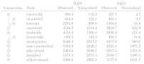
The inspiration on making this software package comes from many years of struggle with doing the same thing again and again in different projects like these. And the motivation to make something generic that can be used for plethora of projects in the future.
Why Rust?
Rust1 is an open source programming language that claims to be fast and memory efficient to power performance critical services. Rust is also able to integrate with other programming languages.
Rust provides a memory safe way to do modern programming. The White House has a recent press release2 about the need to have memory safe language in future softwares. The report3 has following sentense about the Rust language.
The results of the survey from stackoverflow4 shows Rust has been a top choice for developers who want to use a new technology for the past 8 years, and the analysis also shows Rust is a language that generates for desire to use it once you get to know.
-
https://www.rust-lang.org/ ↩
-
https://www.whitehouse.gov/oncd/briefing-room/2024/02/26/press-release-technical-report/ ↩
-
https://www.whitehouse.gov/wp-content/uploads/2024/02/Final-ONCD-Technical-Report.pdf ↩
-
https://survey.stackoverflow.co/2023/#technology-admired-and-desired ↩
Writing this Book
I’m used to emacs’s org-mode, where you can evaluate code and show
output and all those things. Like markdown in steroids.
mdbook seems to have some of those functionality in it as
well. Though I think emacs’s extension through elisp is lot more
flexible and easier to extend. mdbook supporting custom
preprocessors and renderer means we can extend it as well.
In the process of writing this book. I made the following things.
Syntax Highlight for NADI specific syntax
mdbook uses highlight.js to syntax highlight the code blocks in
it. And since nadi system has a lot of its own syntax for string
templates, task system, table system, network system etc. I wanted
syntax highlight for those things. Although the attribute files are
subset of TOML format, so we have syntax highlight for
it. Everything else needed a custom code.
Following the comments in this github issue led me to find a workaround for the custom syntax hightlight. I don’t know for how long it will work, but this works well for now.
Basically I am using the custom JS feature of mdbook like:
[output.html]
additional-js = ["theme/syntax-highlight.js"]
To insert custom highlight syntax. For example adding the syntax highlight for network text is:
// network connections comments and node -> node syntax
hljs.registerLanguage("network", (hljs) => ({
name: "Network",
aliases: [ 'net' ],
contains: [
hljs.QUOTE_STRING_MODE,
hljs.HASH_COMMENT_MODE,
{
scope: "meta",
begin: '->',
className:"built_in",
},
]
}));
The syntax for network is really simple, for others (task, table,
string-template, etc) refer to the theme/syntax-highlight.js file
in the repository for this book.
After registering all the languages, you re-initialize the highlight.js:
hljs.initHighlightingOnLoad();
mdbook-nadi preprocessor
Instead of just showing the syntax of how to use the task system, I
wanted to also show the output of the examples for readers. So I
started this with writing some elisp code to run the text in
selection and then copying the output to clipboard that I could paste
in output block. It was really easy in emacs.
Following code takes the selection, saves them in temporary tasks file, runs them and then puts the output in the clipboard that I can paste manually.
(defun nadi-run-tasks (BEG END)
(interactive "r")
(let ((tasks-file (make-temp-file "tasks-")))
(write-region BEG END tasks-file)
(let ((output '(shell-command-to-string (format "nadi %s" tasks-file))))
(message output)
(kill-new output)
(delete-file tasks-file))))
But this is manual process with a bit of automation. So I wanted a
better solution, and that’s where the mdbook preprocessor comes in.
With the mdbook-nadi preprocessor, I can extract the code blocks,
run it, and insert the contents just below the code block as output.
Once I had a working prototype for this, I also started adding support for rendering string templates, and generating tables along with the task system.
String templates
For string templates, write the templates in stp blocks like below that will have the syntax hightlight.
Hi my name is {name}.
If you add run into it, it’ll run the template with any key=val pairs provided after run.
Basically writing the following in the mdbook markdown:
```stp run name=John
Hi my name is {name}.
```
Will become:
Hi my name is {name}.
Results (with: name=John):
Hi my name is John.
Tasks
For tasks, similary write a block with task as language. You can use
! character at the start of the line to hide it in the view. Use
them for essential code that are needed for results but are not the
current focus. And when you add run it’ll run and show the output.
```task run
!network load_file("data/mississippi.net")
node render("Node {NAME}")
```
network load_file("data/mississippi.net")
node render("Node {NAME}")
Results:
{
lower-mississippi = "Node \"lower-mississippi\"",
upper-mississippi = "Node \"upper-mississippi\"",
missouri = "Node \"missouri\"",
arkansas = "Node \"arkansas\"",
red = "Node \"red\"",
ohio = "Node \"ohio\"",
tenessee = "Node \"tenessee\""
}
Tables
The implementation for tables are little weird right now, but it works. Since we need to be able to load network, and perform actions before showing a table.
So the current implementation takes the hidden lines using !and runs them as task system, with additional task of rendering the table at the end.
Example:
```table run markdown
!network load_file("./data/mississippi.net")
<Name => {_NAME:repl(-, ):case(title)}
^Ind => =(+ (st+num 'INDEX) 1)
>Order => {ORDER}
```
Becomes:
network load_file("./data/mississippi.net")
<Name => {_NAME:repl(-, ):case(title)}
^Ind => =(+ (st+num 'INDEX) 1)
>Order => {ORDER}
Results:
| Name | Ind | Order |
|---|---|---|
| Lower Mississippi | 1 | 7 |
| Upper Mississippi | 2 | 1 |
| Missouri | 3 | 1 |
| Arkansas | 4 | 1 |
| Red | 5 | 1 |
| Ohio | 6 | 2 |
| Tenessee | 7 | 1 |
I’d like to refine this further.
Task can be used to generate markdown in the same way as the tables can:
For example task run of this:
network load_file("./data/mississippi.net")
network table_to_markdown(template="
<Name => {_NAME:repl(-, ):case(title)}
^Ind => =(+ (st+num 'INDEX) 1)
>Order => {ORDER}
")
Results:
| Name | Ind | Order |
|:------------------|:---:|------:|
| Lower Mississippi | 1 | 7 |
| Upper Mississippi | 2 | 1 |
| Missouri | 3 | 1 |
| Arkansas | 4 | 1 |
| Red | 5 | 1 |
| Ohio | 6 | 2 |
| Tenessee | 7 | 1 |
If you do task run markdown then:
network load_file("./data/mississippi.net")
network table_to_markdown(template="
<Name => {_NAME:repl(-, ):case(title)}
^Ind => =(+ (st+num 'INDEX) 1)
>Order => {ORDER}
")
Results:
| Name | Ind | Order |
|---|---|---|
| Lower Mississippi | 1 | 7 |
| Upper Mississippi | 2 | 1 |
| Missouri | 3 | 1 |
| Arkansas | 4 | 1 |
| Red | 5 | 1 |
| Ohio | 6 | 2 |
| Tenessee | 7 | 1 |
Which means it can be used for other things:
network load_file("./data/mississippi.net");
network echo("**Details about the Nodes:**")
network echo(render_nodes("
=(+ (st+num 'INDEX) 1). {_NAME:repl(-, ):case(title)} River
"))
Results:
Details about the Nodes:
-
Lower Mississippi River
-
Upper Mississippi River
-
Missouri River
-
Arkansas River
-
Red River
-
Ohio River
-
Tenessee River
You can also use the same method to insert images like this, at the end of your tasks, so that the image generated by the tasks can be inserted here.
# do some tasks
network echo("Some other output form your tasks")
network clip()
network echo("../images/ohio-low.svg")
Results:
Optimization Algorithms
We can have input variables to change, and output variables to optimize, but how do we take what function to run to calculate the output variable…
One simple idea can be to take a command template to run. So we will change the input variables, run the command for each node or network, and then that command will update the output variable that we can optimize for.
We might require an option to call other functions in this case. Then maybe we can just pass the name of the function.
Complex idea could be to add the support for loop syntax in task system.
Interactive Plots
An experiment using the cairo graphics library shows that a PDF can
be directly produced without using LaTeX as intermediate using the
network information. This functionality — although not as complete
as the one in the example — has been exposed as an internal network
function for now. Further functionality related to this idea can be
embedding network information in simple plots, or generate the whole
plot along side the network information.
It might be a good idea to make several functions that can export the interactive plots in LaTeX, PDF, PNG, SVG, HTML, etc. separately instead of single format.
LaTeX and HTML will be easier due to text nature, for others I might have to spend time with some more experimentation on cairo.